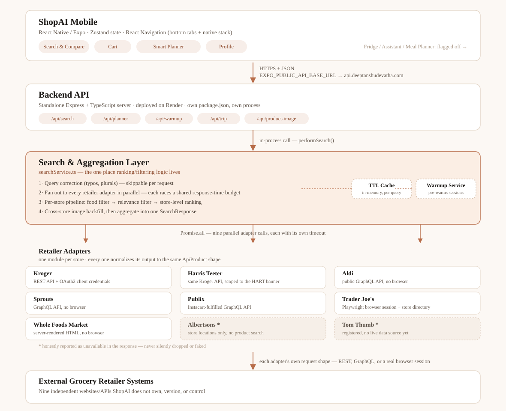
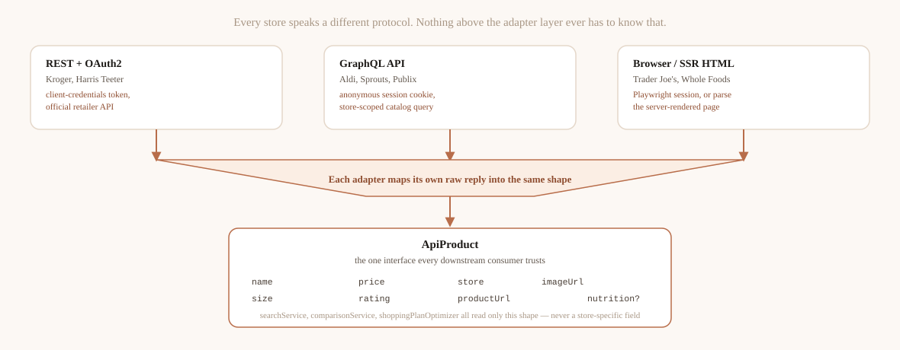
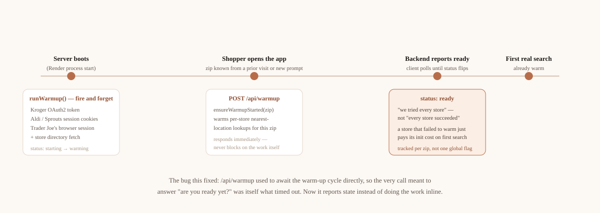
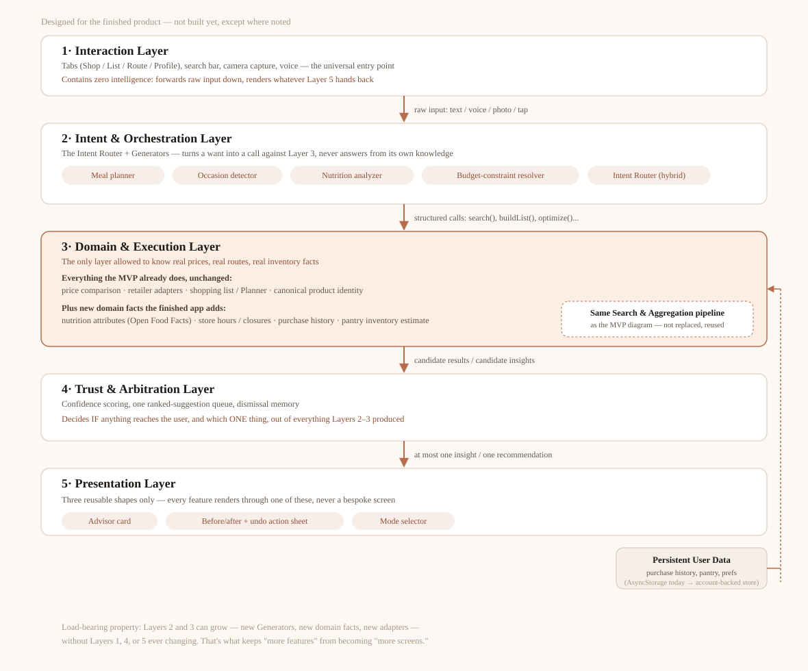
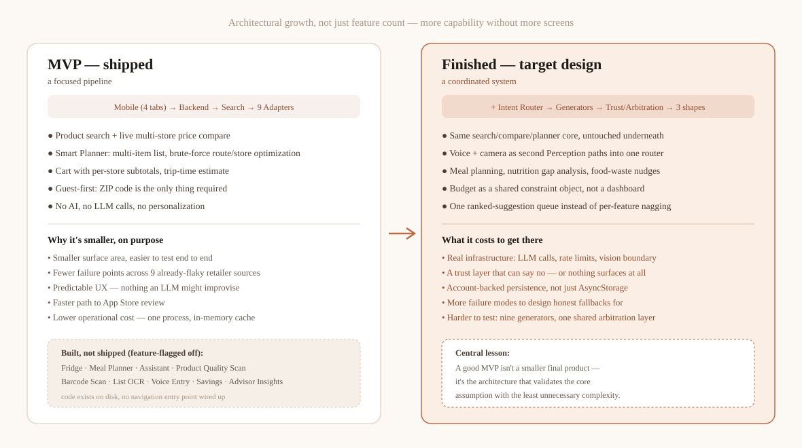

Open or download your current resume
The site includes your uploaded document so visitors can access it immediately while browsing your page.
A clean portfolio-style home page with direct access to resume, interests, research, and blog content. This layout includes image placeholders, layered motion, and smooth scroll reveals so you can keep the structure polished while adding your own details over time.
Each card below jumps directly to a main section so visitors can immediately browse your academic profile, current interests, research direction, and writing.
Keep your experience, education, achievements, and downloadable resume in one structured place.
Open section → 02 / InterestsHighlight favorite topics, communities, skills, and extracurricular activities.
Open section → 03 / ResearchShowcase themes, papers, experiments, labs, or long-form ideas with room for visuals.
Open section → 04 / BlogCreate a home for essays, updates, notes, and future posts with a magazine-style layout.
Open section →This area is ready for your formal achievements and also links directly to the resume file already placed in the folder.
The site includes your uploaded document so visitors can access it immediately while browsing your page.
Add degree information, institution, coursework, and milestones here.
Summarize impactful technical work, publications, or thesis directions in concise language.
Include organizations, mentoring, student communities, or outreach contributions.
Use this card to describe the role, scope, methods used, and measurable outcomes.
List languages, frameworks, research methods, software tools, and domain strengths.
Use this section to show personality, long-term interests, interdisciplinary themes, and the communities or ideas you care about.
Highlight student groups, volunteering, outreach, hackathons, or communities where you contribute and learn.
This section is structured for projects, publications, experiments, or thesis-oriented work, with visual placeholders and room for concise summaries.
Add a short overview of the problem area, why it matters, and the methods or frameworks you are using to investigate it.
Use this for a publication summary, a capstone project, or a lab collaboration.
Describe a system, prototype, or experiment setup with key findings or lessons.
Outline the next question you want to pursue or the extension of current work.
First-hand accounts from projects, hackathons, and learning experiences.
No posts in this category yet.
ShopAI is out for App Store and Play Store review. Here's the architecture that actually shipped — a focused search, compare, and planning pipeline across nine live grocery retailers — next to the five-layer AI system it's designed to grow into, and an honest account of what got cut, why, and what it would take to build the rest.
A look back at everything since that first shaky Zoom call in November: what's actually been covered, what's changed about how I teach, and why this is nowhere near finished.
If statements this week, plus a room that felt different from the start: more returning faces, a few new ones, and more hands going up than usual. I forgot to plan an else statement and improvised with the example already on screen. Then a student's roller coaster exercise broke in three different ways at once, and fixing it together turned into the best debugging lesson we've had yet.
I finished assembling the first complete draft of the manuscript today — Introduction, Methods, Results, Discussion, and Conclusion, all in one document, for the first time since I started this project fourteen months ago. It's rough. There are sentences I'll rewrite, a couple of figures that need to be redone at higher resolution, and at least one Methods paragraph Joe already flagged as too dense. But it's a real draft of a real paper, built entirely from work I did and understood, and I want to take a minute to look back at how it got here before diving into revisions.
A mixed review session that was supposed to take forty minutes and took the entire hour and then some, because every topic we touched pulled in a question from something covered months earlier. A good problem to have, and a real lesson about pacing reviews.
After day two ran into more material than an hour could hold, I rebuilt the lesson around just four related ideas: booleans, comparison operators, and, and or. The slower pace changed the room: more volunteers, more students explaining things to each other, and a third grader who worked out and vs. or on her own.
Booleans, if statements, for loops, and while loops: four big ideas for students who'd only just started learning to code. Attendance held steady from day one, but participation dropped as the pace outran the class. Here's what that taught me about the difference between covering material and actually teaching it.
A full breakthrough session: everyone builds their own number guessing game from scratch, no template this time, combining nearly a year of scattered lessons into one program each kid can genuinely call their own.
Standard deviation, introduced conceptually rather than with the formula, because nobody in this group needs to compute one by hand yet and everybody benefits from understanding what it's actually pointing at.
Past the mini project from the trip, into something a little bigger: a simple calculator program that pulls together nearly everything covered so far. Notes on lesson planning for a group that's outgrown single-concept sessions.
The Discussion section has taken longer to draft than Methods and Results combined, and I think that's because it's the section where I actually have to take a position rather than just report what happened. It's easy to describe a permutation importance table. It's harder to write a paragraph honestly explaining what it means that clinical features account for the overwhelming majority of predictive power, without either overselling the speech features' contribution or undermining the motivation for the entire project.
Twelve students joined our first Google Meet coding session. We installed Python, covered data types, variables, and user input, and worked through two exercises together. By the end, everyone had working code. Here's how the first class went.
I started a cross-communal coding initiative bringing together students from Avondale, The Heights at Westridge, and Ridgeview at Panther Creek. The first meeting had nobody knowing each other and experience levels ranging from zero to two-plus years. Here's what actually happened—and why it felt like the right kind of start.
First Zoom call since returning from Hyderabad, and it felt stranger than I expected to be back behind a laptop camera with kids I'd spent two weeks sitting across a whiteboard from. A reflection on what changed and what, oddly, didn't.
The last in-person session before I fly home. A mini project, a full classroom of kids who feel entirely different to me than they did two weeks ago, and a goodbye I'd been quietly dreading since about day three of actually being here.
A low-stakes review day, in person, that turned out to be the best gauge yet of what's actually landed over seven months. Also: the funniest wrong answer of the entire series, courtesy of Naveen.
The hardest day of the trip so far. A lesson that needed translating almost line by line, a power outage in the middle of it, and a real, unglamorous lesson in adapting on the fly rather than sticking to the plan.
A full group activity day: splitting into teams, using real cricket scores the kids tracked themselves, and watching mean, median, and mode stop being abstract vocabulary and start being something they argued about.
Working one-on-one with a student who's said maybe fifty words to me total since November. In person, away from the group, something finally opened up, and it wasn't at all what I expected the reason to be.
First real lesson taught in person, and my first genuine encounter with what "limited resources" means in practice: one chalkboard, a handful of chalk pieces, and no way to quietly delete a mistake the way Zoom's screen share always let me.
The day I stopped teaching through a screen. Landing in Hyderabad, arriving at the children's home in Kompally, and meeting, in person, nine kids I'd only ever known as small rectangles on a laptop. Nothing about it went quite how I'd pictured it, and all of it was better.
Spent this stretch actually writing prose for the first time, starting with Methods and Results rather than the Introduction, on Joe's advice — apparently it's common to draft these sections first since they're the most mechanical and the least dependent on getting the framing exactly right, and writing them first tends to clarify what the Introduction and Discussion actually need to set up and explain.
The last Zoom session before I fly to Hyderabad. Lists, quickly, and then most of the session spent on logistics, nerves, and a curriculum recap that made five and a half months feel a lot longer than it does week to week.
Probability, taught through coin flips and dice rolls that turned into an actual experiment when theory and reality didn't quite match up. A good lesson in why expected results and actual results aren't always the same thing.
For loops, and the specific moment a program stopped feeling like a list of instructions and started feeling like a tool that could do work on its own. One of the cleanest breakthroughs of the whole series so far.
First real statistics session: mean, median, and mode, taught using something more concrete than a textbook data set. A question about which measure is "the right one" led somewhere I didn't expect.
While loops, introduced correctly and then immediately broken on purpose, because watching a program get stuck forever taught the lesson faster than any explanation of the word "condition" ever could.
A reflection session that turned into genuinely exciting news: I've booked a trip to Hyderabad in May, which means these classes are about to become, briefly, something other than a Zoom call for the first time since we started.
Almost a full year after I first started reading about domains, tasks, targets, and data, I sat down this week to start turning all of this into an actual manuscript, and immediately ran into a problem I hadn't anticipated: I don't really know how to write a research paper. I know how to run experiments, keep notes, and argue with myself about whether a result is real. I don't have much practice putting that into the specific, conventionalized shape a paper is supposed to take.
Nested conditionals, the first topic this year that genuinely made the whole group slow down at the same time. A session about layers, about drawing boxes inside boxes, and about admitting a topic is hard rather than pretending it isn't.
Putting trigonometry to actual use, and picking an example rooted in something the kids already do for fun rather than a textbook word problem about ladders leaning against walls.
Else statements, which should have been a quick add-on to last time's lesson. Instead it turned into the funniest session in weeks, once Naveen decided to test the limits of what counts as a valid else block.
First real trigonometry session, and I underestimated how much of the difficulty isn't the math itself but the sheer number of new words arriving at once: hypotenuse, adjacent, opposite, sine, cosine, tangent, all in one sitting.
If statements, the first real branch point in anything we've built so far. I planned one explanation and ended up using three different versions of it before it actually landed for everyone, which is its own kind of lesson.
I set aside a patient-grouped held-out test set this week — a slice of patients that took no part whatsoever in feature selection, hyperparameter tuning, or fold-ensemble training. Everything up to this point has been evaluated purely through cross-validation, which is a reasonable way to make modeling decisions on a small dataset but leaves open the possibility that repeated tuning decisions, made by me, looking at CV scores over and over across months, have quietly overfit to the CV folds themselves. A genuinely untouched test set is the only way to check that.
A step back from syntax entirely: a session on basic computer literacy, because I realized a few weeks in that some of the group could write working code without a clear picture of what a file, a folder, or the computer itself was actually doing underneath it.
Booleans are supposed to be the simple topic, just two values. Tonight proved that simple doesn't mean quick, especially once comparison operators entered the mix and every question started with "wait, is that true or false."
I wanted to connect algebra to something visual before we went any further, so tonight was about graphing intuition: what a line actually represents, and the moment a student realized a graph is just a picture of an equation, not a separate thing to memorize.
Most of this stretch was incremental tuning, and in the spirit of documenting the real process rather than just the wins, I want to write down what didn't work as much as what did, because the list of rejected ideas ended up being long.
Arithmetic operators should be the easiest session of the whole curriculum. It mostly was, until the modulo operator showed up and turned into the most requested topic of the night, for reasons I did not see coming.
A whole session eaten by screen-sharing problems before we even got to the actual lesson: integers versus floats, and why Python cares about the difference even when a person wouldn't.
A session on inequalities turned into a session on keeping four different attention spans pointed at the same whiteboard-that-isn't-a-whiteboard. Notes on pacing, side conversations, and a number line that finally made things click.
Ran the ablation study I've been planning since November, comparing four feature configurations under identical patient-grouped 5-fold cross-validation: linguistic (handcrafted) features alone, SBERT embeddings alone, clinical features alone, and combinations of all three. The results settle the question from a few weeks ago, at least as far as this dataset can settle it.
Text seemed like the easy topic. It was not the easy topic. Indexing broke everyone's brain a little, myself included when I tried to explain why counting starts at zero without just saying "because it does."
Back after the break, and instead of jumping straight into new material I spent this session taking stock: how many classes we've actually held, who's stuck around, and what I got wrong in the first stretch that I want to fix in the second.
Our first real math session, and my first time teaching algebra to someone who has never seen an equals sign used the way I mean it. A session about balance, about why you do the same thing to both sides, and about switching gears entirely for a week.
With the entry-MMSE bug fixed and the rest of the clinical feature joins audited and confirmed correct, I ran a proper permutation-importance analysis across all five cross-validation folds. The method: for each fold, take the trained model, measure its validation R², then shuffle one feature column at a time (breaking that feature's relationship to the target while leaving everything else intact) and measure how much R² drops. A bigger drop means the model was relying on that feature more. Repeating the shuffle multiple times per fold and averaging cuts down on noise from any single unlucky shuffle.
I introduced input() and immediately regretted not thinking through what happens when you hand five kids a program that asks them anything they want to type. Mostly it was fine. One answer nearly broke the lesson plan in the best way.
No laptop, no code, just twenty minutes of logic puzzles because I wanted to see how these kids think before I taught them one more rule to follow. It turned into one of the more fun sessions so far, and taught me something about who's actually leading in this class.
While setting up the ablation study I'd planned last time, I went digging into why the "entry MMSE" feature — which I expected, based on everything I understand about this problem, to be by far the single most predictive feature available — wasn't behaving the way I expected in early feature-importance checks. It turned out to be almost inert, which didn't make sense.
Variables sound simple until a nine-year-old asks why the box doesn't disappear after you read what's inside it. A session about labels, boxes, and the specific question that made me rethink how I explain assignment.
Getting Python running on one shared laptop should have been simple. It was not simple. A walkthrough about installers, PATH variables, and the particular chaos of teaching software setup over a connection that drops every few minutes.
With patient-grouped cross-validation now in place as an honest baseline, I finally did the thing I'd been putting off since August: incorporated the clinical metadata that comes bundled with the Pitt Corpus alongside the speech data. Specifically, I added each patient's entry MMSE (their cognitive score at their first recorded visit), Blessed Dementia Scale score (a measure of functional impairment in daily activities), CDR (Clinical Dementia Rating), NYU and Mattis battery scores, and their baseline diagnosis category (dementia, control, or otherwise).
I've wanted to volunteer teach for a while, and it finally became real on a Sunday evening: five kids gathered around one shared laptop at a children's home in Kompally, and a Zoom link that took three tries to actually connect. Here's how it started.
I flagged this concern a couple weeks ago and finally sat down to check it properly, and it turned out to be a real problem, not a false alarm. My cross-validation setup had been splitting the dataset at the level of individual samples (patient-visits), not at the level of patients. Since many patients in this cohort have multiple visits, that means it was entirely possible — and, once I checked, actually happening — for one visit from a given patient to land in the training fold while another visit from that same patient landed in the validation fold.
Switched the modeling backbone from Random Forest to LightGBM, a gradient-boosted decision tree library. The core difference from Random Forest is how the trees are built: Random Forest trains many trees independently on bootstrapped samples and averages them, while gradient boosting trains trees sequentially, where each new tree is fit to correct the errors (residuals) of the ensemble built so far. In principle, this lets the model capture more subtle feature interactions and generally squeezes more performance out of tabular data — at the cost of being more sensitive to hyperparameters and more prone to overfitting if you're not careful.
With the Random Forest baseline in place, I spent this stretch trying to squeeze more signal out of the longitudinal structure of the data rather than adding entirely new feature families. The instinct behind this: I've been treating each visit somewhat independently, but the whole point of longitudinal data is that a patient's history should inform the prediction, not just their most recent snapshot.
I trained a Random Forest regressor on the same feature set the LSTM had access to — handcrafted discourse features plus SBERT embeddings, flattened per patient rather than fed in as a sequence — and it outperformed the LSTM by a meaningful margin, landing around R² ≈ 0.4 on cross-validation. That's still far from a result I'd call strong, but it's a real improvement over the neural network's ~0.44 validation score once you account for the fact that the LSTM's number came from a single validation split while the Random Forest number is a cross-validated estimate, and the Random Forest got there with a small fraction of the tuning effort.
Over four intense days, our team built ShopSmart—an app that finds the cheapest, fastest, or most eco-friendly multi-store shopping route. We placed first out of all submissions, earning $100 and five .xyz domains. Click to read the full story.

After weeks of feature engineering, I finally trained a model. Since the whole premise of this project involves patients with multiple visits over time, a sequence model felt like the obvious first choice — I built an LSTM that takes a patient's visit history as a sequence of feature vectors (handcrafted coherence features plus SBERT embeddings per visit) and predicts the MMSE score at a future visit.
I lost most of two days this week to environment setup, which is not something I expected to be writing about in a research blog, but it felt worth documenting because it's such a normal part of doing this kind of work. Coreference resolution — figuring out that "she," "the woman," and "her" in a transcript all refer to the same entity — needs a fairly heavy transformer-based model, and getting a working coreference pipeline installed alongside the rest of my existing packages caused enough dependency conflicts that I ended up isolating it into its own virtual environment entirely, separate from the environment I use for everything else. Not elegant, but it works, and I'd rather have a slightly ugly setup than lose another day to it.
Handcrafted lexical-overlap features (how many words two consecutive sentences share) are a reasonable first pass at coherence, but they have an obvious blind spot: two sentences can be about the exact same thing while sharing almost no vocabulary at all ("the woman is drying dishes" vs. "she's wiping plates with a towel"). If I only measure literal word overlap, I'll systematically miss semantic coherence — coherence at the level of meaning rather than surface form.
This week was almost entirely plumbing, and I mean that in the least glamorous sense possible: getting raw transcript files and a metadata spreadsheet into a single clean table I can actually build features on top of. It is not exciting to write about, but it's the part of research nobody tells you takes as long as it does.
Dataset search this week, and I think I found the right one: the DementiaBank Pitt Corpus. It's a collection of transcribed speech samples from participants completing a handful of standardized elicitation tasks — most notably the "Cookie Theft" picture description task, along with fluency, recall, and sentence-repetition tasks — collected from both a dementia group and a healthy control group. Critically for what I want to do, many participants were seen across multiple visits over time, with cognitive assessment scores (including MMSE) recorded at each visit.
This week was pure reading, and it was the first time the project started to feel like it had real technical bones rather than just a motivating story. "Discourse coherence" turns out to be a whole subfield with its own vocabulary, and a lot of it maps surprisingly cleanly onto the kinds of breakdowns that get described anecdotally in dementia case studies.
I started meeting regularly with Joe Xiao, a PhD student who agreed to mentor me on this project, and that alone has changed the pace of things. Having someone to push back on half-formed ideas in real time is worth more than another week of solo reading. This week's conversations helped me go from "healthcare NLP, broadly" to something much more specific.
I've decided to spend this year trying to do real machine learning research, and I want to write about it as it happens rather than only after the fact. I have no formal research experience — until now, "research" for me has meant reading other people's papers, not writing my own. So the first few weeks of this project have mostly been about learning how research problems get made in the first place, not about writing any code.
ShopAI is currently sitting in App Store and Google Play review. That milestone sounds bigger than it is — the build under review is deliberately not the app I originally set out to build. It's the version I let myself finish, which turned out to require cutting most of what I'd already written. This is the engineering story of how a hackathon prototype called ShopSmart turned into a real, submitted iOS and Android app called ShopAI: what actually shipped, why the MVP is smaller than the codebase behind it, and what the rest of the architecture is built to grow into.
Grocery prices for the same item vary more between stores in the same city than most people track. A shopper who's willing to compare — this store for milk, that one for produce — can save real money, but doing that comparison by hand means either checking multiple apps and circulars or just not bothering. ShopAI's core bet is narrow on purpose: search once, see live prices for that item across every nearby store that carries it, and let the shopper decide where to actually buy it. Everything else in the app — the shopping list, the multi-store trip optimizer, eventually the AI layer — exists to make that one comparison more useful, not to replace it.
ShopAI is a React Native / Expo app (bundle id com.ddevatha.shopai, currently on build 7) with its own independent backend — a standalone Express + TypeScript server, ported line-for-line from a sibling Next.js project's search route and deployed on Render behind api.deeptanshudevatha.com. The mobile app has no search logic of its own beyond the UI: every search, every planner request, and every warm-up check is a call to that backend. Nothing about the shipped feature set is exotic — it's product search, live multi-store price comparison across nine retailers, store filtering, product detail pages, a cart with per-store subtotals, a sign-in-optional profile, and a Smart Shopping Planner that turns a whole grocery list into an optimized multi-store trip. What makes it worth writing about is everything that isn't in that list, and why.
(One small fossil from the build's history: the Expo project slug is still CartIQ_mobile — the app was briefly renamed to CartIQ mid-development before coming back to ShopAI. Expo project slugs are painful to change without losing the EAS project link, so it just... stayed. Harmless, but a good reminder that naming churn during a build is cheap right up until it touches something with a real identifier attached.)
By the time I was preparing for App Store submission, the mobile app's src/ directory had screens and services for a Virtual Fridge, a full recipe-to-shopping-list Meal Planner, an AI chat Assistant, a camera-based Product Quality scanner, barcode scanning, receipt/list OCR, voice list entry, a "Savings" insights screen, AI advisor-card insight banners, and product-substitution recommendations. None of it shipped. All of it still exists on disk.
The cut is a literal config file, src/config/features.ts, and its own comment explains the reasoning better than I can paraphrase: "App Store MVP cut — every non-core feature is disconnected from the UI here rather than deleted. The underlying screens/services/components all still exist; flipping a flag back to true ... is the entire re-enable path for a future release." The navigator that wires up screens doesn't even import the disabled ones — not behind a runtime check, but omitted entirely — because Metro resolves a module's whole dependency graph at bundle time, and half of those screens depend on native packages (expo-camera, expo-notifications, expo-speech-recognition) that aren't installed in this build at all. Kept unconditionally: product search and price comparison, store selection, the shopping list, and the cart — the two MVP experiences and the bridge between them.
One cut wasn't a flag at all. The original ShopSmart hackathon prototype's headline feature was a GPS route view across multiple stores — visible in the screenshot on that earlier post. ShopAI's navigator doesn't register a Route screen at all anymore — not flagged off, removed as a product decision, with the code left untouched on disk for the same reason as everything else. Turn-by-turn navigation between stores added real complexity (live location tracking, a route map, a guided pickup checklist) for a workflow most shoppers already have solved with their phone's own maps app. Store addresses now just show up in the cart instead. Cutting your own hackathon-winning feature is an uncomfortable thing to do, but it was the right call for what the MVP was actually trying to prove.
Sign-in is optional too, for now: authRequired is currently false, so onboarding doesn't force account creation — a ZIP code, collected through a lightweight prompt with no account attached, is the only thing search and the Planner actually require. Cart, price history, and planner preferences already degrade gracefully with no signed-in user (each one no-ops on an empty owner field); under this flag they just don't persist across sessions, which is the expected shape of guest use, not a broken feature.
With the cuts made, what's left is a short, legible pipeline: a mobile client, one backend process, a search-and-aggregation layer, and a set of retailer-specific adapters that talk to nine external grocery systems that ShopAI doesn't own or control.

The shipped pipeline — four layers, one direction of data flow, no step the app can skip.
Two things about this diagram matter more than the boxes themselves. First, all of the ranking and filtering logic lives server-side, in one file (searchService.ts): query correction, food filtering, relevance scoring, and per-store selection all happen before a response ever leaves the backend. The mobile app doesn't re-implement any of it — it calls its own endpoint and renders whatever comes back, the same discipline the five-layer design further down this post depends on. Second, the backend is genuinely independent: it's not a route inside some larger monolith, and it doesn't depend on a sibling web app's dev server being up. That was a real design decision — an earlier iteration of the mobile app called into a Next.js web app's own API routes directly, which meant the mobile app simply didn't work unless that unrelated project happened to be running. Porting the same search logic into its own standalone Express server removed a dependency the mobile app had no business having.
The best way to make an architecture diagram concrete is to run one real request through it. Here's what happens when a shopper opens the app and searches for "milk."

One search, eight steps, roughly a few seconds of wall-clock time. Prices shown are illustrative — this is a UX walkthrough, not a live price snapshot.
The interesting steps are the middle three. Query correction runs first and is cheap to skip — "milk" needs none of it, but a typo or a plural gets normalized before anything is sent to a single retailer, so every store adapter is searching for the same corrected term. Then the backend fires all nine retailer calls with Promise.all, and each one races a shared response-time budget rather than its own fixed timeout: if one store's adapter is unusually slow, it comes back marked pending instead of holding up the eight stores that already have an answer. That distinction — a per-store timeout that only protects that one store, versus a budget the whole response respects — is what keeps one flaky retailer from making every search feel slow.
Once results land, each store's raw reply goes through the same three-stage funnel regardless of where it came from: a food filter (is this actually a grocery item, not a gift card or a magazine that happened to match), a relevance filter (does this product actually match what was searched), and a per-store selection step that ranks and trims what's shown. Only after that does the backend do a cross-store image backfill — filling in a missing product photo from a matching item at a different store — and assemble everything into one SearchResponse with an explicit status per store: ok, error, unavailable, or pending. The mobile app never has to guess why a store's section is empty.
None of the nine retailers built their systems for an app like this to consume. Some expose a real API; most don't, at least not one meant for outside use. That heterogeneity is the actual hard problem underneath "compare prices across stores" — not the comparison logic itself, which is simple, but making nine structurally different data sources look like one.

Three integration strategies in production at once, collapsed into one interface before anything downstream sees a store name.
Kroger and Harris Teeter (the same underlying Kroger API, scoped to a different store banner) are the closest thing to an ideal case: a real REST API behind OAuth2 client-credentials. Aldi, Sprouts, and Publix (Publix by way of its Instacart fulfillment integration) are GraphQL APIs meant for their own site's frontend, reachable with an anonymous session cookie rather than a documented public contract. Trader Joe's has no API at all worth using, so its adapter drives a real Playwright browser session and reads the store's own site the way a person would; Whole Foods is server-rendered HTML parsed directly, no browser needed. Two more retailers, Albertsons and Tom Thumb, are registered — their store locations resolve fine — but have no live product-search source at all yet, and the search response says exactly that (unavailable) instead of silently returning nothing or, worse, stale data dressed up as current.
Every one of those adapters converges on the same shape, ApiProduct — name, size, price, store, rating, image, an optional nutrition block — and every service above the adapter layer (search ranking, the comparison screen, the shopping-plan optimizer) reads only that shape. This is why the retailer abstraction matters more than it sounds like it should: it's the difference between "add a tenth retailer" meaning "write one more adapter that emits the same shape" versus "audit every consumer of retailer data for a new special case." A generic, declarative onboarding path for browser-based stores already exists and was validated against Trader Joe's and Aldi — a new store's config can be little more than a homepage URL and a search-input selector. That path was also used to evaluate Target as a candidate integration, and the honest conclusion there wasn't "too hard" — Target's site is technically compatible with the framework — it was that Target's own terms of service explicitly prohibit automated data collection, which is a different, non-technical kind of constraint the adapter layer can't abstract away.
Depending on nine systems ShopAI doesn't control has produced real production incidents, not hypothetical ones: a Node.js setTimeout delay overflow in a 30-day location cache once stalled the event loop badly enough to turn a normal ~1.5-second search into a 27-second one — fixed by capping the internal sweep interval rather than trusting a naive delay calculation. Render's build environment silently ignored a Playwright browser-path environment variable because the service had originally been created by hand in the dashboard before render.yaml existed, so a config file that looked authoritative wasn't actually being applied — a deployment-tooling gap that only showed up as a live Chromium failure in production. Neither of those is a "retailer" problem exactly, but both are the kind of thing that only surfaces once real, external, uncooperative systems are in the loop.
Kroger's OAuth token, Aldi and Sprouts' session cookies, and Trader Joe's browser session all cost real time to establish — cost that used to be paid by whichever shopper's search happened to arrive first. ShopAI moves that cost out of the request path entirely with a warm-up cycle.

Warm-up as a small state machine — starting, warming, ready — checked per ZIP code, not as one global flag.
At server boot, the backend fires a warm-up pass fire-and-forget: OAuth tokens, session cookies, and Trader Joe's browser session and store directory all get established before any shopper has asked for anything. Once the app knows a shopper's ZIP, it fires a second, ZIP-specific warm-up for each store's nearest-location lookup — also fire-and-forget, which turned out to matter more than it sounds. An earlier version of the warm-up endpoint awaited the full warm-up cycle before responding, which meant the one call meant to answer "are you ready yet, quickly" was itself the thing timing out on the client. The fix was to make readiness a reported state instead of work done inline. Readiness is also tracked per ZIP rather than as one shared boolean, because this backend serves every concurrent shopper from a single process — without that, one shopper's in-flight cycle for a new ZIP could make a different shopper's already-warm ZIP falsely report "still warming," or worse, falsely report "ready" the moment an unrelated cycle happened to finish.
Comparing one item at a time is useful; comparing a whole grocery list is the harder, more valuable version of the same idea, and it's what the Smart Shopping Planner does. Given a list of items, it resolves each one against real search results, then decides which combination of stores to actually visit. With seven stores carrying real product data, that's 127 possible non-empty store combinations — small enough to score every single one exactly rather than reach for a heuristic or an approximate solver, so "cheapest" really is the cheapest of every option that was checked, not the cheapest of a shortcut.
The optimizer produces four candidate plans — cheapest, fastest, fewest-stops, and balanced — and I'll be honest that I overstated how uniform that scoring was in an earlier design note, until I wrote a review of my own architecture against the actual code and found the mistake: cheapest, fastest, and fewest-stops are hardcoded single-field sorts (by total cost, then drive time, then store count), and only "balanced" runs the weighted multi-factor score I'd described as if it applied everywhere. It's a small correction, but it's the kind that only surfaces by actually reading the code you wrote instead of trusting your own summary of it. Trip time and distance are estimated with a documented, clearly-labeled approximation (an assumed 25 mpg vehicle at $3.50/gallon for the gas-cost component) rather than presented as measured fact. A fifth "healthiest" mode exists too, but only scores products that carry real, extracted nutrition data from Open Food Facts — a product with no nutrition data is treated as missing information, never silently scored as the worst option, and the mode itself is only offered when at least one product in the plan actually has the data to back it.
A shopper-set budget target is compared against a plan's real cost after the fact today — useful, honest feedback — but doesn't yet steer which combination of stores gets chosen; that's a deliberately separate, larger change I haven't made yet. Store reliability works the same cautious way: a store confirmed closed right now is excluded from consideration before the optimizer even runs, but "confirmed closed" currently only has one real data source (Kroger's own posted hours) — every other store's hours are unknown, and unknown is never treated as closed. Both are foundations laid early on purpose, not half-finished features pretending to be complete.
The MVP pipeline isn't a placeholder for a different, unrelated "real" architecture — it's the bottom two layers of one. The rest of the design lives in an architecture document I wrote specifically to answer a harder question than "what feature comes next": how do you add meal planning, a voice assistant, nutrition analysis, a virtual fridge, and household budgeting to a search-and-comparison app without the result turning into twenty features bolted side by side, each with its own screen, its own notification style, and its own copy of "what store sells this."

Five layers, strictly ordered — a layer only ever calls the one below it. This is a design document today, not a shipped system.
The load-bearing property of this design is that layers two and three can grow arbitrarily — new generators, new domain facts, new retailer adapters — without layers one, four, or five ever changing. A meal-planning feature, concretely, isn't a new pipeline: it's one more generator that turns "beef and broccoli with rice" into an ingredient list, which is then handed to the exact same search-and-cart-and-optimizer pipeline a manually typed list already goes through. If a feature ever needs its own price logic or its own notification surface, that's the signal it was designed as a silo instead of one more path through the shared architecture — which is also the design's explicit answer to why there's no separate "Nutrition Chat" screen, no "My Fridge" browsing screen, and no per-feature notification inbox: every insight, from every generator, resolves through one ranked-suggestion queue and one of three reusable presentation shapes, so twelve capabilities can exist without twelve competing ways of interrupting the shopper.
It's worth being precise about how much of this is real today. The backend has zero LLM calls anywhere in the shipped search or planner path — confirmed, not assumed, by grepping the actual dependency list. What already exists as flagged-off code is a hybrid intent classifier that resolves free text to a closed set of actions (and deliberately does nothing else — no search, no cart mutation, no generated response text, by design), a template-based meal-plan generator that runs with no AI and no live prices at all, and a vision-LLM boundary for a product-quality and expiration scanner that would call a real hosted model (gated behind an API key, rate-limited, and honestly unavailable rather than faking a result when unconfigured). The single ranked-suggestion queue, the dismissal memory, and the three reusable presentation shapes — the parts of the design that keep this from sprawling — don't have code yet. That's Phase 0 of the roadmap for a reason: it ships zero new user-visible features and exists purely to be the thing everything else composes into, before any generator gets turned on.
Laid side by side, the shift isn't "the finished app has more screens" — the MVP already cut screens that once existed. It's that the same core pipeline gets wrapped in orchestration, arbitration, and persistence that don't exist yet, in service of features that reuse rather than duplicate what's already shipped.

Same core underneath both columns — the difference is everything wrapped around it.
| Dimension | MVP (shipped) | Finished (target) |
|---|---|---|
| Navigation | 4 tabs/screens: Search, Cart, Planner, Profile | Same screens, plus a voice/camera entry point into one shared router |
| AI / LLM usage | None in the shipped search or planner path | Intent classification, vision quality checks, meal & nutrition generation |
| Personalization | None — every shopper sees the same ranking | Purchase history, dismissal memory, preference-aware suggestions |
| Data persistence | AsyncStorage on-device only, guest-friendly | Account-backed store for history, pantry, and preferences |
| Store coverage | 9 retailers, 7 with live product data | Same adapter model, extensible via declarative store configs |
| Failure handling | Per-store timeout + response budget, honest "unavailable" states | Same, plus a trust layer that can suppress a low-confidence result entirely |
| Testing surface | One pipeline, one response shape to assert against | Nine-plus generators sharing one arbitration layer to test in combination |
| Operational cost | One Express process, in-memory cache, no AI spend | LLM API usage, rate limits, a vision-model budget |
The MVP's advantages are real and not just consolation prizes for shipping less: a smaller surface area is genuinely easier to test end to end, there are fewer failure points spread across nine already-imperfect retailer integrations, the UX is fully predictable because nothing in it is generated, and there's no AI infrastructure — no rate limits, no model costs, no hallucination surface — to get wrong before the core assumption (will people actually use cross-store comparison) is even validated. App Store review also rewards exactly this kind of focus; a smaller, more predictable app is a smaller, more predictable review.
Its limitations are just as real. There's no personalization, no automation, and the shopping planner's sophistication is capped at "score every real combination well," not "understand what this specific shopper actually wants this week." Every one of those gaps is a legitimate reason the finished architecture exists, and every layer that architecture adds is a legitimate cost, not a free win: real infrastructure and real spend once an LLM is in the loop, more failure modes to design honest fallbacks for, harder testing once nine generators share one arbitration layer instead of nine independent code paths, and a genuine need for caching, observability, and security work that a stateless, AI-free backend simply doesn't have to think about yet.
The lesson I keep coming back to: a good MVP isn't a smaller version of the finished product. It's an architecture optimized to validate the most important product assumption with the least unnecessary complexity. ShopAI's most important assumption was never "can this app plan a meal" or "can this app talk to you" — it was "will a shopper actually open an app to compare grocery prices across stores before AI, personalization, or automation are anywhere in the picture." Everything cut from this release was cut because it couldn't help answer that question, not because it wasn't worth building eventually.
Concretely: a real, submitted iOS and Android app with live pricing across nine retailers, backed by a backend with no AI dependency to keep running or paying for, small enough that I could hold the entire request path in my head while debugging a live production incident. That's not a small thing — it's what let ShopAI go from "hackathon prototype with simulated data" to "something in App Store review" on a timeline a much larger scope never would have allowed.
The payoff of designing the five-layer system now, even mostly unbuilt, is that the features it's meant to support don't require re-architecting anything underneath. A meal-planning feature ends at the same list-and-cart screen a manually typed list already uses. Voice is a second way to reach the same intent router typed search already goes through, not a second implementation of search. A budget is one constraint object the optimizer already knows how to accept, not a dashboard. None of that removes the real cost of building it — it just means the cost is additive, one generator and one domain fact at a time, instead of compounding into a rewrite.
The retailers never designed for this. Every integration decision in this app — REST here, GraphQL there, a real browser session somewhere else — is downstream of the fact that nine companies built nine systems for their own customers on their own websites, and ShopAI is a guest in all nine at once. Respecting that (Albertsons and Tom Thumb reporting themselves honestly unavailable rather than faking data; Target excluded on a terms-of-service basis rather than a technical one) mattered as much as any of the actual code.
Warm-up and caching turned out to matter more than clever ranking. The single production incident that did the most damage to search latency wasn't a bad relevance algorithm — it was a cache sweep interval that overflowed a 32-bit timer. Fast, predictable infrastructure is a bigger lever on "does this feel good to use" than most of the ranking logic I spent more time on.
And writing an honest review of my own architecture against my own code — not a plan, an actual line-by-line check of what the code does versus what I'd claimed it does — found a real bug (a dead substitution path in the Cart screen) and a real overstatement (the optimizer's scoring wasn't as uniform as I'd described it). Neither would have surfaced from reading the design doc again. Both surfaced from checking it against the code.
Immediately: get through App Store and Google Play review, then actually watch what a small number of real shoppers do with the MVP before adding anything. If cross-store comparison and the Planner don't earn their keep on their own, no amount of AI on top changes that. If they do, the roadmap's own next phase is deliberately unglamorous — better search ranking, typo tolerance, and progressive result loading — before anything in the five-layer design gets touched. Phase 0 of that design, the shared ranked-suggestion queue and the Intent Router skeleton, ships zero new user-visible features on purpose; it exists to be true before a single AI-powered flag gets flipped back on.
ShopAI in review right now is smaller than the app I have almost all the code for. That was the right trade. The MVP exists to answer one question honestly, and the finished architecture exists so that answering it doesn't have to be thrown away once the next question — meal planning, personalization, an actual assistant — is worth asking too.
I finished assembling the first complete draft of the manuscript today — Introduction, Methods, Results, Discussion, and Conclusion, all in one document, for the first time since I started this project fourteen months ago. It's rough. There are sentences I'll rewrite, a couple of figures that need to be redone at higher resolution, and at least one Methods paragraph Joe already flagged as too dense. But it's a real draft of a real paper, built entirely from work I did and understood, and I want to take a minute to look back at how it got here before diving into revisions.
In May 2025 I didn't know what a research question was supposed to look like, let alone have one. The project moved through a real sequence of refinements: a vague interest in healthcare NLP became an interest in speech and cognition specifically; a mood became three candidate research questions; three candidate questions became one, grounded in an actual dataset — the DementiaBank Pitt Corpus — once I understood why longitudinal data mattered for a trajectory-based question rather than a snapshot-based one. Feature engineering went from word counts, to handcrafted discourse and coherence features, to SBERT-based semantic embeddings, to coreference and entity-tracking features that, in the end, mattered less than I expected them to. Modeling went from an LSTM that was badly mismatched to the dataset's size, to Random Forest, to LightGBM with Optuna-tuned hyperparameters and patient-grouped cross-validation, ending in a five-model fold ensemble.
The two hardest technical turning points were not the ones that felt like progress at the time. Discovering the patient-leakage bug in my cross-validation splits in October 2025 meant watching my numbers get worse right after I'd "fixed" something — correctly worse, but still uncomfortable. And finding the silent entry-MMSE bug in December — a renamed column and a string/integer ID mismatch, both quietly defaulting to a group median for months — was humbling in a different way: the single most predictive feature in the entire project had been effectively broken the whole time I was trying to interpret results without it. Both of those moments taught me more about doing careful research than any of the moments that felt like wins.
The final model — a patient-grouped, five-fold LightGBM ensemble over clinical, handcrafted discourse, and SBERT-embedding features — reaches a held-out test R² of 0.732 (RMSE 3.35, MAE 2.22, Pearson r 0.867), with a 5-fold cross-validation estimate of R² = 0.840 ± 0.015 on the development data. The honest scientific finding underneath those numbers isn't that speech alone can predict cognitive decline — it's that clinical baseline assessments are the dominant predictor of future MMSE, and that discourse and semantic speech features contribute a smaller, consistent, cross-validated improvement on top of that. That's a narrower claim than the one I set out chasing in May 2025, and it's the one I can actually stand behind.

The title page of the first complete draft — fourteen months after the project started as a vague interest in healthcare AI.
Looking back at fourteen months of posts, the throughline isn't a straight line at all — it's a series of corrections. Simpler models beating a more sophisticated one. A leakage fix that made results worse but more honest. A silent bug that had been quietly capping performance for months. A hypothesis (speech features as the primary signal) that had to be narrowed once the ablation evidence came in. None of these felt like progress in the moment. All of them were necessary to end up with a result I trust.
The draft still has real gaps. The Methods section needs another editing pass for density. A couple of figures need to be regenerated. And I know the Discussion's limitations section will need to expand once outside readers — starting with Joe, and eventually reviewers — start asking questions I haven't thought to ask myself yet.
Revision, not new research, for now: tightening the writing, regenerating figures, and getting outside feedback on the draft. Looking further out, the natural extensions are ones I can only gesture at with this dataset: validating on a larger and more contemporary longitudinal cohort, incorporating other biomarkers alongside speech (acoustic features, gait, or other passively collected signals) rather than speech alone, exploring temporal architectures better suited to irregular, sparse visit intervals than the LSTM I tried in August 2025, and — most importantly — testing whether any of this holds up on data collected outside of the Pitt Corpus entirely. This draft is a real milestone, not a finish line.
After day two, I rewrote the lesson plan for day three almost completely. Instead of trying to cover as much ground as possible, I picked four ideas that all point at the same underlying concept: booleans, comparison operators, and, and or. I gave the entire hour to just that. No for loops, no while loops, nothing held over from the topics that had gotten rushed the last time. Fewer moving pieces, more time on each one.

The opening slide for day three. After the last session, I cut the lesson down to a quarter of the topics.
We opened with a quick review of int(), float(), and the arithmetic operators from day two, then moved into booleans properly, not as a rushed setup for if statements but as their own topic. I put up simple expressions, 5 == 5, 10 > 20, "cat" != "dog", and gave the class real time to sit with each one before revealing the answer. Nobody was racing to the next slide. That alone changed how the hour felt.
From there we went into comparison operators, then and and or, treating each one as worth a few extra minutes rather than a line to get through. I kept coming back to the same framing: and needs both sides to be true, or only needs one. Repeating that a few different ways, with a few different examples, is not exciting to plan, but it's what day two was missing.
One of the students who joined that day was younger than the rest of the group, around third grade, and new to the bootcamp. During one of the interactive examples, I asked the class to explain the difference between and and or in their own words, and she was the one who raised her hand first. She said and needs both things to be true, and or just needs one of them. Then, without me prompting her further, she came up with her own example to show it. Watching someone that young reason through boolean logic correctly, and unprompted, told me more about whether the slower pace was working than anything else that happened that day.

The and/or/not slide, the one we spent the most time on and the one that stuck.
The difference from day two showed up almost immediately in how many students were willing to answer out loud. When I put up a comparison and asked the class to predict True or False before I revealed it, more hands went up each time, and a few students started arguing quietly with each other about the answer before either of them said it aloud. That's a good sign: it means they're reasoning it through rather than guessing.
A few students started explaining things to each other without me stepping in. When one student got stuck on why age > 5 and age < 18 evaluated to True for a specific number, another student jumped in with an explanation before I had the chance to. I let it run instead of cutting in. Students were also more willing to read code out loud than they had been in earlier sessions, with less hesitation over the syntax and more focus on what the line actually meant.
I closed the lesson with a small challenge: write a password checker that asks for a username and password, and prints True only if the username is "admin" and the password is "kidcode123." It's a direct application of and, dressed up as something that feels like a real program instead of a textbook exercise. A handful of students said they wanted to try extending it on their own, adding more usernames or a limited number of attempts, before we'd even finished going over the intended solution.
The goal was never just to get through a curriculum. It's to get students to a point where they trust their own reasoning enough to try things without waiting for permission. Day two taught me that cramming four topics into an hour doesn't actually teach four topics. It teaches a fraction of one and leaves the rest as vague impressions. Day three, with a quarter of the material and four times the attention on each piece, is what I want more of. A third grader working out and versus or on her own is a better outcome than a room that nodded along to twice as many slides.
Attendance for day two was close to day one. Most of the same students logged back onto the Google Meet, plus one new face who'd heard about the bootcamp from a friend. Before getting into new material, I had a few students walk through their homework from day one out loud: a short program that calculates what age you'll be five years from now. Almost everyone had it working. The couple who didn't were missing a closing parenthesis and, in one case, had left out int() entirely, which we fixed together in a few minutes.
The plan for day two was booleans, if statements, for loops, and while loops. Four topics, one hour. I want to be honest about this now: that was too much. Each of those ideas is worth sitting with on its own, and stacking all four together in a single session meant students were still absorbing one concept by the time I'd already moved on to the next.

The opening slide for day two. In hindsight, the title alone was a preview of how packed the hour would get.
I spent several hours beforehand building this presentation, because I wanted booleans and loops to feel visual and concrete instead of abstract rules to memorize. We started with booleans, since if statements and loops both depend on them. I put a handful of expressions on screen: 5 > 3, "cat" == "dog", 10 == 10, and asked students to call out True or False before I revealed the answer. That part went well. By the third or fourth example, more hands were going up, and a couple of students started predicting correctly even on the trickier ones.
Where things slowed down was the move into if statements. A few students asked questions that showed they were genuinely trying to connect the new material to what we'd covered on day one. One asked whether an if statement could check a variable's value the same way we'd been printing variables, which is exactly the kind of connection I want students making on their own. Answering questions like that well takes time, though, and I hadn't built enough of it into the plan.
By the time we reached for loops and while loops, the pace was working against me. I introduced range(), walked through a for loop counting to five, then a while loop doing roughly the same thing with a counter variable, and asked students to notice the difference between them. A few caught it right away. More were still working through if statements and hadn't fully caught up.
Participation dropped compared to day one during this stretch. Students were still following along: cameras stayed on, nobody dropped off the call, but fewer people were volunteering answers. When I called on someone directly, several needed a moment before responding, which usually means they're still processing the previous idea rather than ready for the next one.

The if/else slide. This is roughly where the pace started outrunning the class.
Even with the pacing off, there were real moments worth holding onto. About twenty minutes after we'd moved past if statements, one student said something close to, "oh, so it's just like a question the computer asks itself," which is a better description of conditional logic than most explanations I could have written myself. Watching students start to think about programming as logical reasoning rather than a set of syntax to memorize is the actual point of teaching this material, and it happened here even with the pace off.
After I ended the call, a few students stayed on for several more minutes with questions about loops. One wanted to know if a while loop could run forever. Another was trying to figure out how to print only even numbers and wanted to talk through her thinking before trying it on her own. Sticking around after class to keep working through something that isn't fully clicking yet is a good sign, regardless of how the hour itself went.
The material I put together was solid. The problem was how much of it I tried to fit into sixty minutes. Teaching isn't just about how much ground you cover. It's about matching the pace of the people you're teaching. Day two was a reminder that four good concepts, poorly paced, don't land as well as two concepts taught with room to actually think them through. I went into day three with a much shorter list.
The Discussion section has taken longer to draft than Methods and Results combined, and I think that's because it's the section where I actually have to take a position rather than just report what happened. It's easy to describe a permutation importance table. It's harder to write a paragraph honestly explaining what it means that clinical features account for the overwhelming majority of predictive power, without either overselling the speech features' contribution or undermining the motivation for the entire project.
I went through a few drafts of the core interpretive paragraph before landing on something I'm satisfied with: the finding that clinical baseline assessments dominate isn't a failure of the speech-based approach, it's a reflection of how strongly autocorrelated cognitive trajectories are over the multi-year timescales in this cohort — and the more interesting scientific contribution is that discourse and semantic speech features add a small, consistent, cross-validated improvement on top of that strong clinical prior, which matters most precisely in settings where frequent clinical assessment isn't available. That's the sentence I wish I'd been able to write back in November, when the clinical-feature jump first made me anxious about the whole premise of the project.
Limitations took a lot of honest reflection. The dataset is small — 173 samples from 126 patients — and drawn from a single site, collected between 1983 and 1991, using elicitation tasks (like Cookie Theft picture description) that may not generalize to other populations, other languages, or more modern speech-collection methods like phone-based passive monitoring. The gap between cross-validated R² (0.840) and held-out test R² (0.732) also belongs here, explained plainly as an expected consequence of an iterative research process rather than glossed over. I also had to be honest that the coreference-based entity features, which took real effort to build back in August 2025, ended up contributing relatively little in the final feature importance ranking — not every feature I built earned its place, and the paper should reflect that rather than only showcasing what worked.

The four limitations that ended up anchoring the Discussion section, mapped out before I started writing prose.
Writing Discussion well seems to require holding two things in your head at once: genuine confidence in what the data supports, and genuine humility about what it doesn't. I don't think I was naturally good at doing both simultaneously going into this — my instinct under uncertainty is to either overstate a finding to make it sound more important, or undersell it out of caution. Neither is what the section needs.
Write the Introduction and Conclusion last, now that I know exactly what claims the rest of the paper actually supports, and then assemble a complete first draft end to end.
The first actual class had been on my mind for weeks. There's a gap between planning a curriculum and teaching it for the first time, and Saturday morning was when that gap closed.
I logged into Google Meet a few minutes early. Students started joining quickly—within a few minutes, twelve had made it in: Anuk, Jaswitha, Oviya, Sabera, Sumirah, Purnima, Arya, Rajani, Ann, Saji, Gowri, and Gowtham. Attendance was better than I'd expected, and almost everyone came prepared and ready to work.

The class as it looked from my end—twelve students on, cameras up, ready to start.
The first order of business was installation. Getting Python and Visual Studio Code running across twelve different computers, with different operating systems and permission settings, never goes exactly to plan. I'd set aside the first part of class specifically for this. A few students ran into issues—one had a permissions error during installation, another's VS Code wasn't detecting Python at all. While I walked through the steps on screen, other students who'd already finished setup helped troubleshoot. Both problems got resolved. We had everyone writing code within about twenty minutes.
We started with print() statements—the most direct way to confirm that Python is running and responding to what you type. Students wrote their first programs, ran them, and a few immediately started changing the text to see what else they could get Python to display. That instinct to experiment before anyone tells you to is a good sign early on.
From there, we covered data types: strings, integers, floats, and booleans. I explained why they matter with a concrete example—you can add two numbers together without any trouble, but if you try to combine a number and a piece of text the same way, Python stops and tells you something's wrong. Understanding that different kinds of data behave differently is one of those foundational ideas that prevents a lot of confusion later.
Variables came next. I described them as labeled containers—a place to store information so a program can refer to it again later without retyping it each time. We worked through several examples together, and I asked students to predict what would be printed before we actually ran the code. Getting them to think through what Python is doing at each step—rather than just watching it happen—made a noticeable difference in the follow-up questions.
The piece that clicked most visibly was input(). Up until that point, every program students had written just displayed something fixed. input() means the program can ask the user a question and do something with whatever answer it gets. That shift—from a program that only displays output to one that can actually respond—is when Python stops feeling like an exercise and starts feeling like you're building something real.
The first exercise was intentionally straightforward: write a program that prints your name, your age, and what you're most excited to learn during the bootcamp. The goal was to make sure everyone had print() working and could use it to display several things in sequence. Students shared their outputs aloud, which made for a good few minutes—hearing what each person wanted to learn gave the class a clearer picture of what everyone was working toward.

Students working through the exercises during class.
The second exercise introduced input(). Students wrote a program that asks the user for their name and age, then displays both back. It's a small program, but it required pulling together several things we'd just covered: storing input in a variable, then using that variable in a print() statement. Syntax errors came up—missing quotes, a mismatched parenthesis, a typo in a function name. We walked through each one as a group. I made a point of saying directly that finding a bug and fixing it is the same work as debugging real code. Getting comfortable with that process early is worth the time.
By the end of class, everyone had both programs running.
Before we wrapped up, I gave everyone a challenge to work on before our next session on Saturday, July 4: can your program tell the user how old they'll be in five years? It builds on everything we covered—input(), variables, and a simple arithmetic step. I want students to work through it themselves rather than waiting to be walked through it in class. Coming back with something they tried, even if it doesn't quite work yet, is more useful than coming back having done nothing.
A few students kept their cameras off early on, which is normal the first time. I made a point to call on different people throughout the session rather than defaulting to whoever was most visibly engaged. When someone wasn't confident about an answer, I encouraged them to guess anyway—being wrong out loud is easier when the room makes that okay.
The dynamic started shifting once students began helping each other. When someone ran into an installation issue, another student who'd already worked through something similar jumped in with what had worked for them. That's not something you can plan for—it just happens when people are paying enough attention to what's going on around them.
A few syntax mistakes turned into useful teaching moments. One student had forgotten to close a parenthesis; another had a quote mismatch that was hard to spot at first glance. We stopped and traced through each one rather than just correcting it and moving on, because reading an error message and working backward to its cause is exactly the kind of thinking that makes someone better at programming over time. I made sure to say that out loud—debugging isn't a sign that something went wrong, it's just part of writing code.
I spent a good amount of time building the curriculum before this class—thinking through the pacing, deciding what to cover first and what to save for later. Running the actual session made it feel less like preparation and more like teaching. That transition is what I'd been working toward.
Watching students write their first Python programs and have them actually work is a different thing from anticipating that it'll go well. The class confirmed the foundation is there. We'll build on it Saturday.
Avondale, The Heights at Westridge, and Ridgeview at Panther Creek are close to each other in the way that many neighborhoods are close—geographically near, socially separate. Students who live in these communities might go to the same stores, drive the same roads, and still never interact in any meaningful way. That gap is ordinary, and most of the time, nobody thinks much about it.
This initiative is my attempt to do something about that gap—not through a grand program or an institutional mandate, but through the smaller, more practical act of learning to code together.
A few weeks ago, I started thinking about whether there was a way to bring students from these three communities into the same room—or at least the same Zoom call—around something concrete. Coding felt like the right anchor. It's a skill with a clear entry point, a low barrier to starting, and enough depth that students at very different levels can still be working toward something real.
The core idea is simple: weekly Zoom sessions, every weekend, open to students from all three communities regardless of experience. Not a class in the rigid sense—more of a shared space to build, ask questions, and figure things out alongside people you wouldn't otherwise know.
The first meeting was introductory. I wasn't trying to accomplish much. I just wanted to see who showed up and what they were carrying with them.

Students who came out for the first KidCode Python Bootcamp session at the neighborhood pavilion.
Around eleven students joined. The first few minutes had the particular awkwardness of a Zoom call where nobody is quite sure who's supposed to talk first—the kind of silence that feels loud. I started with a quick roll call by community, which helped: hearing "Avondale," "Heights," "Ridgeview" repeated back was a small but useful way to make the three-way nature of the group tangible rather than abstract.
We went around with introductions: name, community, grade, and one honest answer to the question, what's your experience with coding, if any? The range was immediate and real. One student from Ridgeview had been writing Python for about two years and had built a few small projects on his own. Another from Avondale had done Scratch in fifth grade and hadn't touched anything since. Most attendees fell somewhere in the middle—a semester of a school CS elective, a few hours of a tutorial they'd started and not finished, or some exposure through a math class that briefly touched on programming.
Nobody exaggerated their experience, which felt like a good sign. There's a version of this kind of meeting where people perform confidence. This wasn't that.

Introducing concepts to the group during one of our early in-person sessions.
The first real discussion came when I asked the group a direct question: What do you actually want to get out of this? It sounds like an obvious thing to ask. In practice, it's the kind of question that separates a meeting from a check-in.
Answers varied. A few participants wanted to build something—an app, a game, something they could show people. One student from The Heights said she mainly wanted to understand what people meant when they talked about programming, because it came up constantly in school and she felt like she was missing a foundation everyone else had. Someone else said he was hoping to get better before AP Computer Science next year. One attendee was more candid: he said he mostly came because a friend had mentioned it and he was curious what this would actually be.
That last answer was probably the most useful. It acknowledged that not everyone arrives at something like this with a clear purpose—and that the initiative has to earn sustained engagement rather than assume it.
We spent some time brainstorming project directions. Ideas that came up: a shared community events app that people across all three neighborhoods could actually use, a simple quiz game that could be built incrementally over several weeks, a tool to track something—scores, weather, anything—just to have a functional goal to orient around. Nobody landed on a final choice. That was fine. The brainstorming wasn't really about the projects themselves yet. It was about getting people to think out loud together.
The most substantive conversation of the night came out of a tension I raised directly: if every session is pitched at beginners, the more experienced students will check out. But if the content runs at an intermediate level, participants who are just starting will fall behind quickly and disengage. Both outcomes undermine what I'm trying to build.
I didn't resolve it in that meeting. What I did do was name it clearly, which matters more than it sounds. The tentative direction—still being worked out—is to structure sessions so that there's a shared foundation everyone works through together, with room for students further along to take on more open-ended extensions of the same concept. Pair-based work across experience levels might help too. The real answer will come from seeing what works once sessions start.
There was also a quieter thread running through the meeting about what it means to learn something with people you don't know yet. Several students mentioned that their school's CS classes felt competitive—graded, ranked, stressful in a way that made them reluctant to admit confusion. The appeal of this kind of initiative, if it's run well, is that none of that applies. Participants aren't being evaluated. They can ask a basic question without it affecting anything except their own understanding.
The most striking moment of the meeting wasn't a discussion point. It was near the end, when I asked everyone to type into the chat one thing they were hoping to build or learn—anything at all, no pressure. Students who had been quiet the whole call participated. The answers were specific and genuine: I want to make a game with a character I designed. I want to understand what a function actually is. I want to build a website for my family's business. I want to learn enough to know if I want to keep going.
That last one—learn enough to know if I want to keep going—is worth sitting with. It's an honest way to describe being at the beginning of something you're not sure about yet. It's also, I think, the right attitude to have toward a first meeting. Nobody has to be certain. They just have to show up.
Starting this weekend, I'll be running weekly Zoom sessions every Saturday or Sunday—consistent enough to become a rhythm. The first few sessions will focus on Python fundamentals: variables, loops, functions, and basic logic. Not because Python is the only option, but because it's readable, the error messages are relatively human, and there are good free tools that work on any computer without setup friction.
The curriculum I put together for the KidCode Python Bootcamp sessions.
I've set up a shared Discord server for communication between sessions—questions, links, code snippets, and whatever else comes up. There's also a lightweight GitHub organization for students who are ready to start version-controlling their work, with no pressure for those who aren't there yet.
The goal by the end of the summer is for every student who stays engaged to have built at least one thing they feel ownership over—something they can point to and say they made. What that thing is will vary. That's fine.
Something worth being honest about: this kind of initiative is easy to talk about and harder to sustain. Getting eleven people onto a call is not the same as building something durable. The weeks where attendance drops, when content is harder than expected, when schedules conflict—those are the real test.
But the first meeting felt like a genuine starting point, not a performed one. The students who joined weren't there because they had to be. They were curious enough to show up, honest enough to say what they didn't know, and open enough to think about what they might want to build alongside people they'd never met.
That's enough to work with.
Spent this stretch actually writing prose for the first time, starting with Methods and Results rather than the Introduction, on Joe's advice — apparently it's common to draft these sections first since they're the most mechanical and the least dependent on getting the framing exactly right, and writing them first tends to clarify what the Introduction and Discussion actually need to set up and explain.
Methods turned out to be more work than I expected, not because the pipeline is complicated to describe, but because I had to decide how much of the year's worth of iteration belongs in the final writeup. I didn't try to narrate every dead end (the paper isn't a diary), but I did keep the methodologically important pivots: why patient-grouped cross-validation replaced sample-level splitting, why the feature set includes clinical, handcrafted linguistic, and SBERT-derived components together rather than any one alone, and why a five-model fold-ensemble is the final architecture rather than a single trained model. Leaving out the leakage story, in particular, felt wrong — it's not just a footnote, it's the reason the reported numbers can be trusted at all, so it gets real space in the Methods section rather than a passing mention.
Results was more straightforward to draft, mostly because by this point the numbers are stable and I'm not still second-guessing them: held-out test R² = 0.732, RMSE = 3.35, MAE = 2.22, Pearson r = 0.867, alongside the 5-fold CV estimate of R² = 0.840 ± 0.015 on the development data. I also included the ablation table from January — clinical alone, speech alone, and combined — because that comparison is central to the paper's actual claim, not a side note. Writing the Results section made me tighten a habit I'd been sloppy about in earlier drafts: stating exactly which evaluation protocol produced each number, since CV and held-out test numbers are not interchangeable and I don't want a reader (or myself, months from now) to conflate them.

An early draft of the Methods section, describing the cross-validation protocol and the final ensemble architecture.
Revised the outline once, after actually drafting these two sections, because writing Results made it obvious the Discussion needs its own explicit subsection on the CV-versus-test gap rather than a passing sentence — it's a real methodological point worth explaining on its own, not something to bury.
Deciding what counts as a limitation versus what counts as ordinary methodological detail is harder than I expected. The small dataset size, the single-site 1980s–90s cohort, and the modest absolute size of the speech-feature contribution all feel like they belong in Discussion, but each of them also shapes how the Methods section should be worded, so there's real back-and-forth between sections rather than a clean linear writing order.
Draft the Discussion — the section I'm least experienced writing, since it requires arguing about what the results mean, not just what they are.
Almost a full year after I first started reading about domains, tasks, targets, and data, I sat down this week to start turning all of this into an actual manuscript, and immediately ran into a problem I hadn't anticipated: I don't really know how to write a research paper. I know how to run experiments, keep notes, and argue with myself about whether a result is real. I don't have much practice putting that into the specific, conventionalized shape a paper is supposed to take.
Joe walked me through the standard structure — Introduction, Methods, Results, Discussion, Conclusion — and, more usefully, through why each section exists and what job it's doing, rather than just the labels. The Introduction has to earn the reader's attention by motivating the problem before mentioning a single number. The Methods section has to be detailed and honest enough that someone else could, in principle, reproduce what I did, including the parts that didn't work if they're relevant to interpreting the parts that did. Results should present findings without yet arguing for what they mean. Discussion is where interpretation, limitations, and honesty about what the data can and can't support all belong. This sounds obvious in the abstract, but looking back at fourteen months of blog posts, I can see how much of what I've written mixes all of these together constantly — which is fine for a running journal, but not for a paper.

The manuscript outline Joe and I settled on — five sections, each doing a distinct job.
The hardest part so far isn't any individual section — it's deciding what the paper's actual central claim is. Eight months ago I would have said "speech predicts cognitive decline." I don't believe that's the honest headline anymore. The honest headline, based on the ablation work from January, is closer to: clinical baseline features are the dominant predictor of future MMSE, and discourse/semantic speech features provide a smaller but consistent complementary signal on top of them. That's a real finding, but it's a quieter one, and I've had to make peace with writing the paper I actually have evidence for rather than the paper I originally set out hoping to write.
Writing the Introduction forced me to state the research question more precisely than I ever have out loud: can longitudinal speech-derived discourse features, combined with clinical history, predict future MMSE severity — and separately, how much of that predictive power comes from speech versus from clinical history alone? Framing it as two connected questions rather than one is new, and it's a direct consequence of the ablation results.
Build a full outline before writing prose — section by section, with placeholder bullet points for what each subsection needs to argue and which numbers back it up — so I'm not making structural decisions and writing sentences at the same time.
I set aside a patient-grouped held-out test set this week — a slice of patients that took no part whatsoever in feature selection, hyperparameter tuning, or fold-ensemble training. Everything up to this point has been evaluated purely through cross-validation, which is a reasonable way to make modeling decisions on a small dataset but leaves open the possibility that repeated tuning decisions, made by me, looking at CV scores over and over across months, have quietly overfit to the CV folds themselves. A genuinely untouched test set is the only way to check that.
The final model: a 5-fold ensemble of LightGBM regressors, trained on the combined clinical, handcrafted discourse, and SBERT-embedding (PCA-reduced) feature set, using patient-grouped splitting throughout, with the noise augmentation and feature-binning tweaks from a few weeks ago. On the held-out test set, this model achieves R² = 0.732, RMSE = 3.35, MAE = 2.22, and a Pearson correlation of 0.867 between predicted and true MMSE. The 5-fold cross-validation estimate, computed over the remaining development data, is R² = 0.840 ± 0.015.
The gap between the CV estimate (0.840) and the true held-out test performance (0.732) is worth sitting with rather than explaining away. Some of that gap is expected and healthy — CV scores from a process that included iterative tuning decisions will tend to run optimistic relative to a truly untouched test set, even when leakage has been carefully controlled for, simply because you made dozens of small modeling choices in response to CV feedback over the past several months. Some of it is probably just small-sample variance — a held-out test set built from a limited number of patients has real sampling noise of its own. I don't think this gap indicates a bug the way the entry-MMSE issue did back in December; it looks like the ordinary, expected consequence of an iterative research process on a small dataset, and I'd rather report both numbers honestly than only report the more flattering one.

Predicted versus actual MMSE on the genuinely untouched held-out test set — R² = 0.732, MAE = 2.22.
I now have two numbers I'm comfortable standing behind: a cross-validated estimate that reflects the model's expected performance under the development protocol, and a held-out test estimate that reflects performance on data that genuinely never influenced any decision. MAE of 2.22 MMSE points, on a 0–30 scale with a clinical impairment threshold around 24, means the median prediction error is well within a single severity band.
Reporting a single cross-validation number from a long iterative process, without a genuinely untouched test set, risks reporting an optimistic estimate even without any leakage bug — the iteration itself is a subtle source of overfitting to the evaluation metric. This feels like an important thing to have learned before writing anything up, not after.
I think the modeling work, for now, is essentially done. Time to shift into writing this up properly — which is its own skill I haven't really practiced before.
Most of this stretch was incremental tuning, and in the spirit of documenting the real process rather than just the wins, I want to write down what didn't work as much as what did, because the list of rejected ideas ended up being long.
What actually helped: training five separate LightGBM models, one per cross-validation fold (each on that fold's ~80% training partition), and averaging their predictions at inference time rather than relying on a single model. Because each fold model sees a slightly different subset of patients, they make somewhat independent errors, and averaging reduces variance without adding bias — a small but consistent improvement over any single fold's model alone. I also added Gaussian noise augmentation to the training features (a small amount of random noise added to feature values during training, forcing the model to be less sensitive to exact feature values) and expanded the feature representation with binned copies of the top features (discretizing continuous features into quantile bins alongside their continuous form), both of which gave small additional gains on this small dataset.

The final ensembling approach: five fold-specific models, each trained on a different 80% of patients, averaged into one prediction.
What didn't help, in roughly the order I tried it: stacking (training a meta-model on top of the five fold models' predictions) — with only about 35 samples per validation fold, the meta-learner had nowhere near enough data to learn a sensible combination and overfit its own training signal; CatBoost as an alternative to LightGBM; adding several more demographic and clinical fields beyond the core set (hamilton scale, race, more detailed diagnosis subcodes); several other PCA dimensionalities for the SBERT embeddings; different noise levels for the augmentation; different top-k thresholds for feature selection; different correlation thresholds for pruning redundant features; and a 7-fold CV split instead of 5. Every one of these either did nothing or made cross-validated R² measurably worse.
A useful mental model I've settled into: on a dataset this size, almost every added degree of freedom is a bet, and most bets lose. The ones that won this round (fold ensembling, light noise augmentation, feature binning) all share a property — they're forms of regularization or variance reduction, not complexity addition. That fits the broader pattern from months ago, when a heavily parameterized LSTM lost to a much simpler Random Forest.
Current best configuration: 5-fold ensemble of LightGBM regressors, Optuna-tuned hyperparameters (shallow trees, strong regularization), trained on the combined clinical + linguistic + SBERT-PCA feature set with noise augmentation and binned feature copies, evaluated under patient-grouped cross-validation.
I've been treating cross-validation as my only evaluation signal for months now. Before I start writing anything up, I want to carve out a genuine held-out test set — patients the model never sees during any tuning or fold-averaging decision — so I have one number I can report with full confidence that no part of the modeling process was allowed to peek at it.
Ran the ablation study I've been planning since November, comparing four feature configurations under identical patient-grouped 5-fold cross-validation: linguistic (handcrafted) features alone, SBERT embeddings alone, clinical features alone, and combinations of all three. The results settle the question from a few weeks ago, at least as far as this dataset can settle it.
Handcrafted linguistic features alone are weak — cross-validated R² in the high-teens percent, at best a faint signal. SBERT embeddings alone do meaningfully better, somewhere in the mid-30s. Clinical features alone are the dominant single source by a wide margin, landing around 0.78 R² on their own — already close to what my full combined model was achieving a couple months ago before I'd even added speech. Combining all speech features (linguistic + SBERT) together gets to a little over 0.4, still far below clinical alone.
The part I actually care about is what happens when you add speech on top of clinical rather than comparing them as competitors. Clinical plus SBERT edges up a few points over clinical alone. The full combination — clinical, linguistic, and SBERT together — is the best configuration in every fold, consistently, not just on average. The gain from adding speech on top of a full clinical feature set is real but modest: a handful of points of R², not a transformation.

The full ablation: clinical features dominate on their own, but the combined model — clinical, linguistic, and SBERT together — wins in every fold.
I think this genuinely refines the research question rather than undermining it. The original framing was close to "can speech features predict cognitive decline." The more defensible framing, based on what I'm actually seeing, is something closer to: clinical baseline assessments are highly predictive of future cognitive status on their own, and discourse/semantic features derived from speech provide a smaller, consistent, complementary contribution on top of that. That's a less dramatic claim, but every piece of it is something I can actually back up with the ablation numbers, fold by fold.
Consistency across folds matters more than the size of an average effect. A gain that's small but present in all five folds is more trustworthy than a larger gain that only shows up in one or two folds — the latter is much more likely to be an artifact of which patients happened to land in which fold.
I want to push the combined model further with more careful hyperparameter tuning and some kind of ensembling, since the ablation suggests I'm not yet squeezing out everything the combined feature set has to offer, and also start thinking about how to frame all of this in whatever the eventual writeup looks like.
With the entry-MMSE bug fixed and the rest of the clinical feature joins audited and confirmed correct, I ran a proper permutation-importance analysis across all five cross-validation folds. The method: for each fold, take the trained model, measure its validation R², then shuffle one feature column at a time (breaking that feature's relationship to the target while leaving everything else intact) and measure how much R² drops. A bigger drop means the model was relying on that feature more. Repeating the shuffle multiple times per fold and averaging cuts down on noise from any single unlucky shuffle.
The results are fairly stark. Entry MMSE dominates, accounting for roughly a third of the model's total explained variance on its own — which lines up with the plain clinical intuition that a patient's baseline cognitive status is highly predictive of their future status, especially over the multi-year timescales typical in this cohort. Blessed Dementia Scale and baseline diagnosis category are the next most important, each contributing a much smaller but still real amount. The Mattis battery score contributes modestly. Somewhere further down the list, a couple of the top SBERT principal components show up — real, but clearly secondary to the clinical variables.
Native LightGBM split-based importance (how often a feature is actually used to split a tree, a different and cheaper-to-compute notion of importance) agrees with the permutation-based ranking on the top features, which is reassuring — it means this isn't an artifact of one particular importance method.

Permutation importance across all five cross-validation folds — entry MMSE dominates, with clinical features well ahead of speech-derived ones.
I think I now have an honest answer to the question I was uneasy about a few weeks ago: yes, clinical baseline information is doing most of the work. That's not the finding I originally set out hoping for, but it is very likely the correct finding, and pretending otherwise would just be bad science. The more useful and more honest question the project can actually answer is a narrower one: given that clinical features are dominant, do the speech-derived features add anything on top? That's a real, well-posed, checkable question, and — crucially — it's still a legitimate motivation for the project even if the answer turns out to be "a little" rather than "a lot." A speech-based signal that adds a modest amount on top of a full clinical workup is a much smaller claim than "speech can replace clinical assessment," but it's the claim the data can actually support, and I'd rather report that than overclaim.
I need to design the ablation carefully enough to actually distinguish "speech adds a little" from "speech adds nothing and this is noise." With a dataset this size, small R² differences between feature configurations could easily be within the range of cross-validation fold-to-fold variance rather than a real effect.
Run the clinical-only vs. speech-only vs. combined ablation, holding everything else (model type, hyperparameters, CV protocol) fixed, and pay close attention to the variance across folds, not just the mean, before drawing any conclusions.
While setting up the ablation study I'd planned last time, I went digging into why the "entry MMSE" feature — which I expected, based on everything I understand about this problem, to be by far the single most predictive feature available — wasn't behaving the way I expected in early feature-importance checks. It turned out to be almost inert, which didn't make sense.
I found two separate bugs, both silent, both data-joining issues of exactly the kind I worried about back in July when I was first matching transcripts to metadata:

The two silent bugs — a renamed column and a string/integer ID mismatch — that had been quietly breaking the single most predictive feature in the project.
mms → mmse1), and my lookup code was still requesting the old column name. Because I was using a permissive .get()-style lookup instead of something that would raise an error on a missing key, every single request for entry MMSE was silently returning nothing and falling back to a default — which, for a numeric feature, meant every patient was effectively receiving the same imputed value (the group median, around 22) regardless of their actual baseline score.1, 2, 3...), while the Excel-based metadata lookup used zero-padded strings ('001', '002'...). Every lookup was failing to match, again silently, again falling back to a default.Both bugs point the same direction: entry MMSE — the single feature I most expected to matter — had been carrying almost no real information for every model I'd trained up to this point. After fixing both issues so that each patient actually receives their true baseline score, this became, by a wide margin, the largest single improvement I've made in the entire project. Permutation importance analysis (feature by feature, measuring how much validation performance drops when a feature's values are shuffled) now shows entry MMSE as the dominant single predictor, well ahead of everything else.
This is a hard lesson, but a useful one: silent failures in data pipelines are more dangerous than loud ones. A crash tells you immediately that something is wrong. A .get() call that quietly returns a default value doesn't — it just degrades your data without telling you, and the model happily "learns" from whatever's left, producing numbers that look plausible enough that you don't necessarily go looking for a bug. I'd already been bitten by ID-matching issues once, back in the very first preprocessing pass in July, and I still managed to reintroduce a version of the same problem months later in a different part of the pipeline.
I now have to go back and be suspicious of every other feature I haven't specifically audited this way. If entry MMSE — the feature I most expected to matter — was silently broken for months, I have no strong reason to assume everything else is fine just because the pipeline runs without errors.
Audit the rest of the clinical feature joins with the same scrutiny, then actually run the ablation study I keep postponing — now on a version of the pipeline I trust considerably more than I did a week ago.
With patient-grouped cross-validation now in place as an honest baseline, I finally did the thing I'd been putting off since August: incorporated the clinical metadata that comes bundled with the Pitt Corpus alongside the speech data. Specifically, I added each patient's entry MMSE (their cognitive score at their first recorded visit), Blessed Dementia Scale score (a measure of functional impairment in daily activities), CDR (Clinical Dementia Rating), NYU and Mattis battery scores, and their baseline diagnosis category (dementia, control, or otherwise).
The jump in performance was immediate and large — considerably bigger than anything I'd gotten from weeks of feature engineering on the speech side. This is both encouraging and a little deflating. Encouraging because the overall pipeline now produces genuinely useful predictions; deflating because it raises an uncomfortable question about the actual thesis of this project. If clinical baseline information alone explains most of the variance in a future MMSE score, what exactly is the speech data contributing? Is this still a project about speech-based cognitive monitoring, or has it quietly become a project about the fact that cognitive decline is autocorrelated over time (which, put that bluntly, is not a very surprising finding)?

The jump in cross-validated R² after adding entry MMSE, Blessed scale, CDR, and baseline diagnosis to the speech-only feature set.
I don't have a satisfying answer yet, and I don't want to pretend I do. My working hypothesis is that clinical features and speech features are capturing genuinely different things — clinical scores are periodic clinician assessments, exactly the kind of infrequent snapshot the original motivation for this project was trying to get away from, while speech features could plausibly be sensitive to finer-grained or more frequent changes. But "plausibly" isn't evidence. The only way to actually answer this is to run the comparison properly: how much does the model gain from speech on top of clinical, versus clinical alone.
The feature matrix now spans three sources: clinical/demographic baseline features, handcrafted discourse/coherence features, and PCA-reduced SBERT embeddings. All are entering the same LightGBM model. I have not yet run a controlled ablation to separate their contributions — that's the obvious and necessary next step before I say anything stronger about what's driving these results.
I need to resist the temptation to declare victory just because the aggregate number went up. A dramatic performance jump from adding a strong feature is exactly the situation where it's easiest to stop being careful about what's actually being measured.
Run a proper ablation study — clinical-only, speech-only, and combined — under the same patient-grouped CV protocol, so I can actually quantify how much (if anything) the speech features are adding once clinical information is available.
I flagged this concern a couple weeks ago and finally sat down to check it properly, and it turned out to be a real problem, not a false alarm. My cross-validation setup had been splitting the dataset at the level of individual samples (patient-visits), not at the level of patients. Since many patients in this cohort have multiple visits, that means it was entirely possible — and, once I checked, actually happening — for one visit from a given patient to land in the training fold while another visit from that same patient landed in the validation fold.
That's a leakage problem. A model doesn't need to learn anything general about speech and cognition to do well under this setup; it can partly just learn to recognize a specific patient's writing/speaking style or baseline severity level from one visit and carry that recognition over to predict their other visit, since the two visits are highly correlated by virtue of being the same person. My cross-validation scores up to this point were, to some unknown degree, optimistic.
The fix is conceptually simple: switch to patient-grouped cross-validation (GroupKFold, grouping by patient ID), so that all of a given patient's visits are guaranteed to fall entirely within one fold — either all in training or all in validation, never split across both. This is a strictly harder evaluation setup, and I want to be upfront that my numbers got worse after making this change, not better. That's expected and, honestly, correct: the previous numbers were inflated by leakage, and this drop is the model losing access to information it was never supposed to have.

The difference between a leaky random split and a patient-grouped GroupKFold split — the same patient can no longer appear in both training and validation.
It's a strange feeling to "fix" your methodology and watch your reported performance go down. Joe was pretty clear with me about this being the right kind of setback, though — a leakage bug that inflates your numbers is much worse to discover after a paper is written than now, and this exact mistake (patient-level leakage in longitudinal clinical data) is common enough in the literature that catching it myself, at this stage, is a genuine positive.
Any evaluation involving repeated measurements on the same entity — patients, users, whatever the unit is — needs to be split at the entity level, not the observation level. This feels obvious written down, but it's exactly the kind of thing that's easy to get wrong when you're focused on getting a pipeline running end to end and haven't stopped to interrogate your own splitting logic.
Re-baseline everything under patient-grouped CV so I have an honest number to compare against going forward, and then revisit the clinical-metadata question from a few weeks ago — I suspect it's about to matter a lot more than it did before, now that my speech-only ceiling looks lower than I'd been telling myself.
Switched the modeling backbone from Random Forest to LightGBM, a gradient-boosted decision tree library. The core difference from Random Forest is how the trees are built: Random Forest trains many trees independently on bootstrapped samples and averages them, while gradient boosting trains trees sequentially, where each new tree is fit to correct the errors (residuals) of the ensemble built so far. In principle, this lets the model capture more subtle feature interactions and generally squeezes more performance out of tabular data — at the cost of being more sensitive to hyperparameters and more prone to overfitting if you're not careful.
That hyperparameter sensitivity is what led me to Optuna this week — a library for automated hyperparameter search. Instead of manually guessing learning rates, tree depth, number of estimators, and regularization strength, Optuna runs a sequential search (using a Bayesian-ish sampling strategy) that tries to find good hyperparameter combinations more efficiently than a grid search would, using the results of earlier trials to inform later ones.

The Optuna objective function used to search LightGBM hyperparameters against grouped cross-validation.
The early results with LightGBM plus Optuna, still on the speech-only feature set (handcrafted coherence features + PCA-reduced SBERT + temporal features), are in a similar ballpark to where Random Forest landed — noticeably not a dramatic jump. That's a little discouraging on its face, but it also isolates something useful: if switching from bagging to boosting doesn't move the needle much, the bottleneck is probably not "wrong model family," which pushes me back toward suspecting the bottleneck is the feature set itself, or specifically, the absence of clinical information I flagged a couple weeks ago.
Model family swaps (Random Forest → LightGBM) are cheap to try and worth trying, but they're not a substitute for actually diagnosing what's limiting performance. I went into this half-hoping LightGBM would just be better and mostly confirmed that it isn't going to rescue a feature-set ceiling on its own.
I also need to be honest with myself about my evaluation setup. I've been using a fairly standard cross-validation split up to this point, and I haven't carefully checked whether the way I'm splitting folds could let information about the same patient leak between training and validation — given that patients have multiple visits in this dataset, that's a real risk I've been ignoring, and I want to go back and check it properly before trusting any of these numbers too much.
Two things, in order: audit my cross-validation setup for patient leakage before drawing any more conclusions from CV scores, and seriously evaluate whether to bring in the clinical metadata fields I've been avoiding.
With the Random Forest baseline in place, I spent this stretch trying to squeeze more signal out of the longitudinal structure of the data rather than adding entirely new feature families. The instinct behind this: I've been treating each visit somewhat independently, but the whole point of longitudinal data is that a patient's history should inform the prediction, not just their most recent snapshot.
A few additions:
Separately, the raw SBERT embeddings were becoming a real dimensionality problem. Each transcript embedding is several hundred dimensions, and once I started concatenating embeddings across multiple visits per sample, the feature count was ballooning relative to the number of training examples — exactly the overfitting risk that burned the LSTM. I added a PCA step to compress the embeddings down to a much smaller number of components before they enter the feature matrix, trying to keep most of the semantic variance while cutting the dimensionality substantially.

Cumulative variance explained by PCA components on the 768-dim SBERT embeddings — 20 components retains most of the signal.
The feature matrix now has four rough categories: handcrafted discourse/coherence features, PCA-reduced SBERT embeddings, temporal/trajectory features derived from visit history, and (still) no clinical metadata. I re-ran the Random Forest baseline with this expanded set, and while there's some improvement, it's incremental rather than transformative — a few points of R², not a step change.
I'm noticing a pattern where each new feature addition gives a smaller marginal improvement than the last, which either means I'm approaching the ceiling of what speech alone can predict, or it means Random Forest isn't the right tool to actually exploit the richer feature set I now have. I don't have a clean way to distinguish those two explanations yet.
Joe suggested trying gradient boosted trees (specifically LightGBM) instead of Random Forest, since boosting tends to handle feature interactions and gets more mileage out of larger feature sets — it's worth ruling out "wrong model" before I conclude I've hit a ceiling on "not enough signal."
From August 27–30, 2025, I had the opportunity to compete in the TechLit Hackathon alongside Arjun Subramanian, Hrudhai Lothumalla, and Arjun Sharma. Over the course of a few intense days, we went from a rough idea to a fully functioning prototype—and ultimately placed first. More than the prize, though, the experience challenged how we think about building technology that is both practical and meaningful.

The ShopSmart dashboard: total savings of $1.49, list cost of $6.85, and an estimated 32-minute trip, alongside a live shopping progress tracker.
We built ShopSmart, an application designed to solve a simple but impactful problem: finding the most cost-effective way to shop across multiple stores. For many people—especially those on tight budgets or trying to shop more sustainably—comparing prices and planning efficient trips can be time-consuming and frustrating.
ShopSmart addresses this by allowing users to input a grocery list and receive an optimized shopping route. Depending on user preference, the app can prioritize the lowest total cost, the fastest route, or the most eco-friendly option. We also integrated an AI assistant that can answer questions about product prices and provide guidance tailored to the user's needs.
Our tech stack combined Python and JSX, supported by web scraping tools, the Google Maps API, and an OpenAI-powered language model for the chatbot. One of our main goals was to ensure that every feature worked cohesively—price aggregation, route optimization, and user interaction all had to come together seamlessly.
I contributed heavily to the development side of the project, focusing on implementing core functionality and ensuring that our backend logic effectively powered the user experience. I also contributed to the video narration—presenting the app and walking through its features for the final submission. Meanwhile, my teammates played key roles in refining the design and crafting a strong final presentation.

The Routes & Savings view: Cheapest, Fastest, and Eco tabs. The cheapest route shows a GPS path, $6.85 total cost, 32 minutes, 8.8 miles, and $4.33 in savings.
As with any fast-paced build, we ran into several technical obstacles. One of the biggest was creating a system that could successfully connect our pricing data with our route optimization logic. Because our approach relied on structured, context-aware data, ensuring that everything worked together in a meaningful and responsive way required multiple iterations.
We also encountered issues with the user interface—particularly our search functionality. While interacting with the AI assistant or adding items to the cart, the search bar would frequently reset, disrupting the experience. This forced us to rethink how users interact with the app and redesign parts of our input flow.
With limited time, we made deliberate trade-offs. We shifted focus toward high-impact features such as map rendering and calculating total trip costs across different store combinations, ensuring our core value proposition remained strong.
One of our biggest achievements was designing a solution that connects personal savings with environmental awareness. ShopSmart doesn't just help users spend less—it also gives them the option to make more sustainable choices in how they shop.
We're also proud of building a working prototype that brings together shopping lists, route optimization, pricing insights, and projected savings. Even with simulated data, we created a system that delivers personalized and actionable results, with clear potential to support underserved communities.
This experience reinforced how important it is to balance functionality, efficiency, and innovation—especially within tight time constraints. We gained hands-on experience integrating large language models into a practical application by building and connecting a chatbot trained on a custom dataset for grocery-related queries.
We also learned that usability comes first. Addressing interface issues made it clear that even strong technical features lose value if the user experience isn't smooth and intuitive. More broadly, we saw how fragmented grocery data can be—and how much opportunity there is to improve it.
Looking ahead, we want to integrate real-time pricing data so the app can reflect actual store conditions and adapt dynamically to changes such as inflation or shifting inventory. With more accurate data and continued development, ShopSmart has the potential to become a practical tool that helps people make smarter, more sustainable shopping decisions every day.
ShopSmart on the TechLit Hackathon DevPost gallery, listed as a winner alongside TinyTeacher and satya.
Winning first place—and earning $100 along with five .xyz domains—was an incredible moment for our team. But more importantly, it validated the idea that thoughtful, user-focused technology can make a real difference. Innovation isn't just about complexity—it's about building something that people can actually use.
I trained a Random Forest regressor on the same feature set the LSTM had access to — handcrafted discourse features plus SBERT embeddings, flattened per patient rather than fed in as a sequence — and it outperformed the LSTM by a meaningful margin, landing around R² ≈ 0.4 on cross-validation. That's still far from a result I'd call strong, but it's a real improvement over the neural network's ~0.44 validation score once you account for the fact that the LSTM's number came from a single validation split while the Random Forest number is a cross-validated estimate, and the Random Forest got there with a small fraction of the tuning effort.
This was a useful, slightly humbling result. I had implicitly assumed that a more "modern" architecture would be a strict upgrade over classical machine learning, and that assumption turned out to be wrong for this specific regime. Tree-based ensembles like Random Forest handle small tabular datasets well for a few reasons that are easy to state and easy to forget in the moment: they don't require gradient-based optimization over large parameter counts, they're naturally robust to irrelevant or noisy features (a tree can simply not split on a useless feature), and they don't need anywhere near as much data to find stable splits as a neural network needs to find stable weights.

A much smaller, simpler model outperforming a heavily parameterized LSTM on this dataset size.
The lesson I keep coming back to is: feature quality matters more than model complexity, at least at this dataset size. Swapping the LSTM for a Random Forest, with no other changes to the underlying features, moved performance in the right direction. That suggests the ceiling I'm currently hitting has more to do with what signal is actually present in my features than with which model architecture is consuming them. If that's true, the highest-leverage thing I can do next is improve or expand the feature set, not keep experimenting with architectures.
Current pipeline: parsed transcripts → handcrafted discourse/coherence features + SBERT sentence embeddings → per-visit feature vectors → Random Forest regression predicting MMSE at a target visit, evaluated with cross-validation. This is now my baseline to beat.
R² ≈ 0.4 leaves a lot of variance unexplained. I don't yet know how much of that is a ceiling imposed by dataset size and noise versus a ceiling imposed by missing information — specifically, I'm currently only using speech-derived features, and I have a nagging suspicion that a patient's own clinical history (not just their speech) is going to matter a lot for predicting their future score, and I'm not using it yet.
Two directions in parallel: keep expanding and refining the feature set (dimensionality reduction on the embeddings, temporal/trajectory features across visits), and start seriously considering whether to bring in the clinical metadata I've mostly ignored so far.
After weeks of feature engineering, I finally trained a model. Since the whole premise of this project involves patients with multiple visits over time, a sequence model felt like the obvious first choice — I built an LSTM that takes a patient's visit history as a sequence of feature vectors (handcrafted coherence features plus SBERT embeddings per visit) and predicts the MMSE score at a future visit.
The results were not good. Validation R² landed around 0.44, with an RMSE over 5.5 MMSE points — on a 0–30 scale, that's a big enough error band to be clinically close to useless. I spent a few days trying to convince myself this was a tuning problem: different learning rates, different hidden sizes, dropout, weight decay, a learning-rate scheduler that reduces on plateau. None of it moved the needle much.
Once I stepped back, the actual explanation was pretty obvious in retrospect. The Pitt Corpus is not a big dataset, and it's an even smaller dataset once you restrict to patients with enough repeated visits to form a meaningful sequence. My input feature vector per visit is large — SBERT contributes several hundred dimensions on its own, on top of the handcrafted features — and the LSTM I built has over half a million parameters. That's an enormous amount of capacity relative to maybe a hundred usable training sequences. I was essentially asking a model built for large sequential corpora to learn from a dataset better suited to a much simpler estimator.

Training and validation loss for the first LSTM baseline — validation performance plateaus well before training loss does.
Joe's read on this, which I now agree with, is that model complexity and dataset size have to be matched, and I had that badly mismatched. A sophisticated architecture doesn't rescue you from a small-sample regime — if anything it makes overfitting worse, since there are more parameters than there is signal to constrain them. This is a lesson I'd read about abstractly before starting this project but hadn't actually felt the consequences of until now.
The deeper challenge is that this dataset is never going to stop being small — DementiaBank isn't growing, and the number of patients with multiple usable longitudinal visits is a hard ceiling. That means the right modeling approach for this project isn't "get a bigger model," it's "get a model whose inductive biases are appropriate for a high-feature-count, low-sample-count tabular problem."
I want to try something much simpler next — a classical tree-based model on the same feature set, partly as a sanity check on whether the features themselves have any signal at all, independent of whatever the LSTM was or wasn't learning.
I lost most of two days this week to environment setup, which is not something I expected to be writing about in a research blog, but it felt worth documenting because it's such a normal part of doing this kind of work. Coreference resolution — figuring out that "she," "the woman," and "her" in a transcript all refer to the same entity — needs a fairly heavy transformer-based model, and getting a working coreference pipeline installed alongside the rest of my existing packages caused enough dependency conflicts that I ended up isolating it into its own virtual environment entirely, separate from the environment I use for everything else. Not elegant, but it works, and I'd rather have a slightly ugly setup than lose another day to it.

Losing two days to dependency conflicts before isolating the coreference model into its own virtual environment.
Once it was running, I used it to build a small set of entity-tracking features on top of the coreference chains: how often a referring expression fails to resolve cleanly, how many distinct entities get introduced across a transcript, and — the one I'm most curious about — entity transition entropy, a measure of how unpredictably the focus of a transcript jumps between entities from one mention to the next. My intuition is that healthy narration tends to move through entities in a fairly structured way (introduce the woman, talk about her for a while, introduce the sink, connect it back to her), while disorganized narration might jump around more erratically. Entropy is a natural way to quantify "how unpredictable is the sequence of entities being talked about."
I also finished off a batch of the remaining handcrafted features I'd sketched out weeks ago: filler rate is now computed properly rather than as a rough estimate, and intra-sentence repetition is tightened up to catch phrase-level repeats, not just single repeated words.
The motivating idea behind all of these features — coreference, entity entropy, repetition, filler rate — is the same one from my discourse-coherence reading: dementia can specifically affect a person's ability to maintain a topic, connect ideas across a narrative, avoid restating things they've already said, retrieve the right word, and keep track of which entity they're currently talking about. Each of these handcrafted features is meant to be a rough proxy for one of those specific underlying processes, rather than a generic "is this text weird" signal. Whether any of them actually correlates with MMSE is still an open question I haven't tested yet.
The coreference model is not particularly accurate on this kind of spontaneous, disfluent speech — it was trained on more standard written text, and picture-description transcripts full of false starts and fragments are a real distribution shift for it. I'm treating its output as a noisy signal rather than ground truth, which means the entity-based features probably have a real noise floor I can't fully get rid of.
I now have a genuinely broad feature set — lexical, semantic/embedding, coreference/entity, and disfluency-based. It's time to stop adding new feature families and actually try to predict something with what I have.
Handcrafted lexical-overlap features (how many words two consecutive sentences share) are a reasonable first pass at coherence, but they have an obvious blind spot: two sentences can be about the exact same thing while sharing almost no vocabulary at all ("the woman is drying dishes" vs. "she's wiping plates with a towel"). If I only measure literal word overlap, I'll systematically miss semantic coherence — coherence at the level of meaning rather than surface form.
This week I started using SBERT (Sentence-BERT), a transformer model fine-tuned specifically to produce sentence embeddings where semantic similarity in meaning corresponds to geometric closeness in the embedding space — unlike raw BERT embeddings, which aren't well-suited to direct comparison via cosine similarity out of the box. Practically, this means I can take two sentences, embed each one into a fixed-length vector, and get a similarity score that actually reflects whether they're about the same thing, not just whether they use the same words.

Computing SBERT embeddings and using cosine similarity between adjacent sentences as a semantic coherence feature.
With that in hand, I built a first batch of embedding-based coherence features:
I also went back and formalized a few of the more literal features I'd been computing ad hoc: lexical overlap (now computed properly rather than as a sanity check), intra-sentence repetition (a sentence repeating a word or phrase within itself), and filler rate (words like "um," "uh," and similar disfluency markers as a fraction of total words).
Looking at the numbers, semantic and lexical coherence measures are correlated but clearly not redundant — some transcripts score reasonably on lexical overlap while scoring low on embedding coherence, and vice versa, which is a mild but reassuring sign that these two feature families are capturing genuinely different things rather than one being a noisy version of the other. I don't yet know if either one actually predicts MMSE — that's still a few weeks away — but it's encouraging that they're not just duplicating each other.
Sentence segmentation on spontaneous, disfluent speech is messier than segmenting written text — people don't produce clean sentence boundaries when they're talking, especially under cognitive load, which is exactly the population I'm studying. I'm currently using a fairly naive punctuation/pause-based segmentation, and I suspect this is introducing noise into the sentence-level coherence features, but I don't have a better solution yet.
Coreference tracking and entity-level features are the next big piece of unfinished business from my discourse coherence reading — I want to measure how well participants track "who's doing what" across a transcript, not just how similar consecutive sentences are.
This week was almost entirely plumbing, and I mean that in the least glamorous sense possible: getting raw transcript files and a metadata spreadsheet into a single clean table I can actually build features on top of. It is not exciting to write about, but it's the part of research nobody tells you takes as long as it does.
The .cha transcript format encodes a lot more than just words — there are speaker-turn markers, timing information, and disfluency/overlap annotations layered into the text. My first task was writing a parser that pulls out only the participant's own speech (excluding the examiner's prompts and interjections) and normalizes it into plain text I can run further processing on, while still preserving enough structure to compute things like pause or repetition markers later if I need them. Getting this right took longer than expected because the annotation conventions aren't perfectly consistent across files — small formatting differences between transcribers.

An early version of exactly the kind of silent ID-matching bug that would come back to bite me again five months later.
The second, more annoying task was joining transcripts to the right metadata. Each patient can have multiple visits, and I needed to make sure a given transcript file was matched to the correct visit's cognitive scores — not the wrong one, and not silently dropped if the match failed. I did not get this fully right on the first attempt (a problem I suspect I'll be paying for later — matching problems like this have a way of resurfacing), but I now have a working pipeline that produces one row per patient-visit, with participant speech text and the corresponding MMSE and metadata fields attached.
At this point the pipeline looks roughly like: raw .cha files → parsed participant utterances → joined with the patient metadata spreadsheet on patient ID and visit number → a single dataframe with one row per visit. I started layering in the simplest possible handcrafted features on top of this — word count, sentence count, basic type-token ratio — mostly as a sanity check that the join is working and that features vary sensibly with visit and with diagnosis group, rather than as features I expect to actually matter in a final model.
The patient ID matching is more fragile than I'd like. Some IDs appear as plain integers in one place and as zero-padded strings elsewhere, and I already had to go back and fix a few silent mismatches this week where a row would just get the wrong metadata attached without erroring. I have a feeling this exact class of bug is going to bite me again later if I'm not careful, since it fails silently rather than loudly.
Now that I have clean text per visit, it's time to move past word counts and start building the actual discourse coherence features I've been reading about — lexical overlap, some notion of topic maintenance, repetition — and also start thinking seriously about semantic embeddings, since word-overlap-based features are unlikely to capture meaning-level coherence on their own.
Dataset search this week, and I think I found the right one: the DementiaBank Pitt Corpus. It's a collection of transcribed speech samples from participants completing a handful of standardized elicitation tasks — most notably the "Cookie Theft" picture description task, along with fluency, recall, and sentence-repetition tasks — collected from both a dementia group and a healthy control group. Critically for what I want to do, many participants were seen across multiple visits over time, with cognitive assessment scores (including MMSE) recorded at each visit.
That longitudinal structure is exactly what the last few weeks of reading convinced me I needed. A single transcript paired with a single MMSE score can only ever support a cross-sectional analysis — does speech at time T correlate with cognitive score at time T? But if a patient has transcripts and scores from visit 1, visit 2, visit 3, I can ask a more interesting question: does what they said at visit 1 (and how it changed by visit 2) tell you something about their score at visit 3? That's a prediction problem over time, not just a correlation at a single moment, and it lines up with the original motivation about wanting something closer to a continuous trajectory than a snapshot.
I spent a good chunk of time this week just understanding the structure of the data rather than doing anything with it. The transcripts are in the CHAT/.cha format used in the CHILDES/TalkBank ecosystem, which has its own transcription conventions (speaker tags, disfluency markers, overlapping speech annotations) that I'll need to parse carefully rather than just treating as raw text. Participant metadata — MMSE and related test scores, diagnosis, demographics — lives separately and has to be joined to the right transcript and the right visit, which already looks like it's going to be fiddlier than I expected, since visit numbering and file naming aren't always perfectly aligned.

The Pitt Corpus's directory structure, and an excerpt from a Cookie Theft picture-description transcript in CHAT format.
I now have a concrete, dataset-grounded version of the question I've been circling for a month: can machine learning models predict future MMSE severity scores using longitudinal patient speech transcripts and extracted speech coherence features? This is the version I'm going to actually try to answer, rather than continuing to refine it in the abstract.
The dataset is smaller than I initially hoped — this is not a "big data" NLP problem, it's a "small, valuable, real clinical data" problem, which Joe pointed out has real implications for what kinds of models are going to be appropriate later. I'm filing that away for when I actually start modeling.
Get the raw .cha files and the metadata spreadsheet actually loading and joined together correctly on my machine, even in the crudest possible way, so I have something to build feature extraction on top of.
This week was pure reading, and it was the first time the project started to feel like it had real technical bones rather than just a motivating story. "Discourse coherence" turns out to be a whole subfield with its own vocabulary, and a lot of it maps surprisingly cleanly onto the kinds of breakdowns that get described anecdotally in dementia case studies.
A few concepts I now understand much better:

Six terms from the discourse coherence literature that became the vocabulary for the rest of this project.
None of these concepts individually screams "dementia marker" — healthy speakers are disfluent, repeat themselves, and occasionally lose a thread too. The interesting question is whether the rate and pattern of these behaviors shift in a way that's measurable and gradual, rather than whether they're present or absent categorically. That reframing feels important: this isn't going to be a classification problem with a clean decision boundary, it's more likely a degree problem.
I'm converging on a working version of the research question: can machine learning models predict future cognitive severity scores using longitudinal speech transcripts and extracted discourse coherence features? The word "future" and "longitudinal" both matter here — I want the model to use a patient's history of visits, not just a single snapshot, echoing the original motivation about capturing trajectories rather than isolated points.
The obvious challenge is that all of this is currently just vocabulary, not features I can compute. Concepts like "global coherence" are qualitative descriptions in the linguistics literature, and turning them into something a model can consume (a number, or a vector) requires an actual operationalization choice, and I don't yet know which of the many possible operationalizations in the literature are the ones that end up mattering empirically.
Now that I have vocabulary, I need data. Time to look seriously at what longitudinal speech datasets with cognitive assessment scores actually exist and are accessible.
I started meeting regularly with Joe Xiao, a PhD student who agreed to mentor me on this project, and that alone has changed the pace of things. Having someone to push back on half-formed ideas in real time is worth more than another week of solo reading. This week's conversations helped me go from "healthcare NLP, broadly" to something much more specific.
The idea that stuck was speech. Clinicians already use cognitive assessments that involve some form of verbal or written response — describing a picture, recalling a story, naming objects — and the reason those tasks work as diagnostic tools is that language production is not one skill but many working together: retrieving the right word from memory, organizing ideas into a coherent structure, maintaining a topic instead of drifting off it, and coordinating all of that under whatever executive-function load the task demands. If a disease disrupts any of those underlying processes, it seems plausible that it would leave a trace in how a person talks, potentially before it becomes obvious on a standard test.

Language production draws on several cognitive processes at once — if dementia disrupts one of them, it may show up in ordinary speech.
That is the actual insight that got me excited: dementia assessment today is built around periodic clinician-administered tests — something like the MMSE or MoCA — administered every several months at best. Between those visits, cognitive change is basically invisible to the medical record. It's a series of snapshots, not a trajectory. If we could pull useful signal out of ordinary speech, in principle you could imagine a much higher-frequency, lower-burden way of tracking cognitive change over time. I want to be careful not to oversell this — I have no evidence yet that it's actually feasible — but as a motivation for a project, it's a real gap.
At this stage, I don't have one precise question yet, more like three drafts I'm choosing between:
These aren't the same question. The first is about prediction, the second is about change-detection, and the third is about correlation with an existing clinical measure. I suspect the project will end up closest to a hybrid of (1) and (3) — using coherence-style features to predict a clinical severity score — but I want to sit with the ambiguity a little longer before committing.
Joe pointed out that "speech changes reflect cognitive decline" is a hypothesis with a lot of prior literature behind it already, particularly around discourse coherence — how well ideas connect to each other across an utterance, whether a speaker stays on topic, how much repetition or filler language shows up. I hadn't heard the term "discourse coherence" before this week, so next up is actually reading into what that means formally, since right now I'm using it as a vibe rather than a defined concept.
Read more specifically about discourse coherence in the clinical linguistics literature, rather than general NLP papers, since I suspect the vocabulary and the standard feature sets are already well established there.
I've decided to spend this year trying to do real machine learning research, and I want to write about it as it happens rather than only after the fact. I have no formal research experience — until now, "research" for me has meant reading other people's papers, not writing my own. So the first few weeks of this project have mostly been about learning how research problems get made in the first place, not about writing any code.
The starting point was broad: I know I want to work at the intersection of AI and healthcare, because it feels like one of the few areas where a marginal improvement in a model can translate into something that actually matters to a person's life, not just a benchmark leaderboard. But "AI for healthcare" is not a research question — it's a mood. I needed a way to turn a vague interest into something concrete enough to actually work on.
The most useful thing I've learned so far is a simple framework for decomposing a research idea into four pieces: domain, task, target, and data. The domain is the general area (say, healthcare, or NLP). The task is the type of problem you're solving (classification, generation, retrieval, prediction). The target is the specific outcome variable you're trying to predict or produce. And the data is whatever you actually have access to that connects the domain to the task. It sounds obvious written out like this, but I found that most of my "ideas" were domains without tasks, or tasks without any realistic data source. Having this checklist has already killed a few ideas I was excited about for about a day each.

The framework that turned a vague interest in healthcare AI into something I could actually start testing against real datasets.
I've been doing a lot of reading on Google Scholar, mostly following citation trails backward from survey papers rather than searching keywords blindly, which turns out to be a much better way to figure out what's already been tried. A few candidate directions I looked at this week:
The main lesson this week wasn't technical — it was that a good research topic has to satisfy at least four constraints simultaneously: it has to be technically feasible for someone at my level, there has to be data actually available to work with, there should be some novelty (or at least an underexplored angle on an established problem), and — this one is easy to underweight — I need to actually be interested in it, because this is going to take a long time.
I want to spend more time specifically inside healthcare NLP and see if I can find a task where longitudinal data (repeated measurements over time, not just a single snapshot) is available, since a lot of the medical prediction problems I've read about only use single time points. If disease progression is gradual, a single snapshot seems like the wrong way to study it.